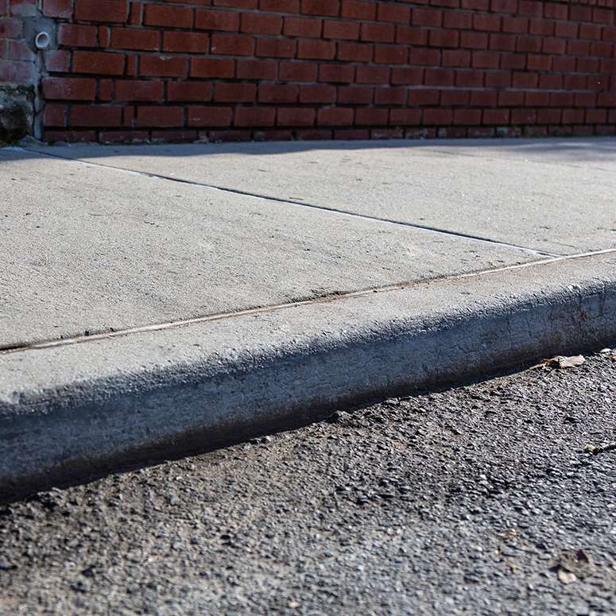
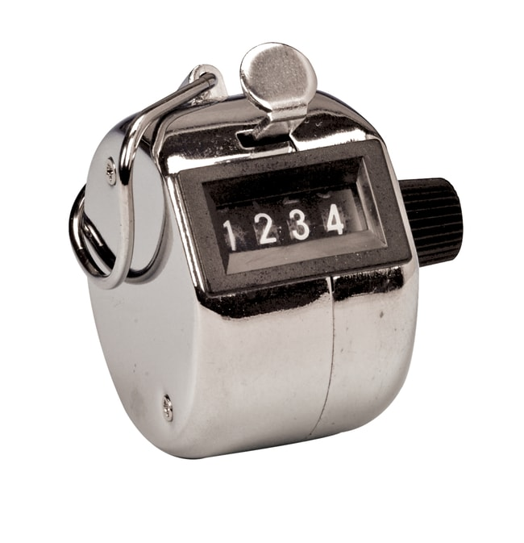

My Vocabulary Page
prank n(c) //
a trick that is played on somebody as a joke
1.1/ "What a childish prank"
1.2/ The incident was a prank that went wrong.
1.3/ I've had enough of your childish pranks.
play a prank on somebody
1.4/ "I played a prank on a classmate."
1.5/ When I was at school we were always playing pranks on our teachers.
1.6/ "It was a rainy day and I couldn't go out, so I decided to
play a prank on my parents."
1.7/ She's always playing pranks on her little brother.
1.8/ "Steve frequently played pranks on others at school."
a prank call, a prank phone call
1.9/ At first I thought it was a prank call.
1.10/ "Once my cousin made a prank call to me. It was all so funny."
1.11/ They decided to have a little fun and make some prank calls.
a prank show
1.12/ "Dravid was on a famous prank show called MTV Bakra."
1.13/ "When Rio Ferdinand joins the club, Gary falls victim
to his famous prank show."
see also: a joke, a trick, a scam, a hoax
prank v(i,t) //
play a trick on somebody that is intended to be funny
but not to cause harm or damage
2.1/ He finally realized he'd been pranked.
2.2/ I felt really stupid when I realized I’d been pranked.
2.3/ "I was pranked by my hostel mates in my first year."
be pranked with something
2.4/ "I was pranked with a toilet once."
2.5/ "I Was pranked with the cheapest hotel room."
2.6/ "FIFA's Blatter was pranked with fake money shower."
2.7/ "He got pranked with a fake pregnancy test."
see also: play a trick on somebody, make fun of somebody,
make a joke of sombody, make jokes about somebody/something,
laught at somebody, mock, tease, bully, be kidding (somebody)
n(c) a prankster
3.1/ "I was about to catch the prankster red-handed!"
3.2/ "My fellow curator Susanne is a very naughty prankster."
3.3/ "A 14-year-old prankster triggered panic buying with a bogus online report."
3.4/ Student pranksters have done considerable damage to the school buildings.
3.5/ "An unknown prankster put a Putin portrait in Colorado's
state capitol where Trump's would be."
curb n(c) //
(UK: kerb) the edge of a raised path nearest the road
1.1/ "The car was too close to the curb."
1.2/ "Pedestrians on the curb are not allowed to cross the street at a red light."
1.3/ "At one point, the scooter driver couldn't pass someone because
the car was too close to the curb, so he got off his scooter."
stand on the curb
1.4/ "Stand on the kerb to show drivers you want to cross,
and wait for the traffic to stop."
1.5/ She stood on the curb and waited until the light turned
green to cross the street.
mount the curb
1.6/ The bus mounted the curb and hit a tree.
1.7/ "I accidentally mounted the curb on my right so that my front
car wheels were kind of on the sidewalk."
1.8/ "The bike mounted the kerb and the rider came off,
suffering a serious head injury."
n(c) something that controls and puts limits on something
a curb on something
2.1/ "Activists seek curbs on animal testing."
2.2/ We are in favour of strict curbs on government spending.
put/impose a curb on something
2.3/ You must try to put a curb on your bad temper.
2.4/ You must try to put a curb on your spending habits.
2.5/ "States across US implement curbs on Chinese firms."
2.6/ Many companies have imposed curbs on smoking in the workplace.
2.7/ The legislature has put a curb on outsourcing state contract work.
lift a curb
2.8/ "Hong Kong lifts curbs on property market, to spend more on tourism."
2.9/ "Hong Kong’s government has lifted curbs on property deals after
home prices fell to a seven-year low, adding to the Chinese territory’s woes."
curb v(t) //
control or limit something that is not wanted
3.1/ He needs to learn to curb his temper.
3.2/ The police are trying to curb under-age drinking.
3.3/ She has to curb her natural exuberance /ɪg'zu:.bə.rəns/.
3.4/ The government should act to curb tax evasion.
3.5/ New measures should curb the speed of cars travelling through the village.
curb spending
3.6/ You really need to curb your spending.
3.7/ They were criticized for failing to curb public spending.
curb a desire
3.8/ "I won't curb my ambition to do special things."
3.9/ He is someone who finds it difficult to curb his fleshly desires.
3.10/ "There were two specific times in my life where I had to
curb my desire to spend."
tally n(c) //
(usually singular) a record or count of a number of things
1/ The final tally was 21 for and 16 against.
a running tally (of something)
1/ The systems keep a running tally of what you buy.
1/ "It's a running tally that reads like a football score when it's over."
keep a tally of something
1/ He kept a tally of his paydays on an envelope.
1/ Make sure to keep a tally of the number of customers going in and out.
1/ "It can be used to keep a tally of stock and resources."
1/ "Using spreadsheets to keep a tally of stock quantities,
or execute a physical inventory count to keep the numbers up to date
is a time-consuming task."
n(c) a tally counter
2/ "At amusement parks, the rides can only hold a certain number of people,
so the operator may use a tally counter to keep track of the number
of people who get on the ride."
2/ "You can also use an online tally counter to keep track of things."
2/ "The researchers watched subjects perform various activities and
used a tally counter to record every single step observed."
2/ "At the outset of the task, the adolescent is instructed to
press the tally counter 20 times to get a feel for the work."
see also: a step-counter
encompass v(t) //
include different types of things
1.1/ The group encompasses all ages.
1.2/ The job encompasses a wide range of responsibilities.
1.3/ The plan encompasses repaving the street and planting 40 new trees.
1.4/ The festival is to encompass everything from music, theatre,
and ballet to literature, cinema, and the visual arts.
1.5/ "The shopping mall encompasses some good brands such as David Jones,
Myer, Target, Big W, Bunnings, Woolworths and more."
1.6/ "Good leaders know that the team encompasses humans, humans capable of
mistakes, and hence they forgive and give the chance to correct errors."
1.7/ " The society encompasses various cultures, traditions, and languages."
see also: include, cover, embrace, incorporate
v(t) surround or cover something completely
2.1/ The fog soon encompassed the whole valley.
2.2/ "The flood encompasses the entire surface of the earth."
2.3/ "The mist encompasses the whole town at night and slowly
recedes as the sun rises."
see also: surround, cover, engulf
chicken out v //
decide not to do something because you are too frightened
1/ I was going to go bungee jumping, but I chickened out.
2/ You're not going to chicken out, are you?
3/ "Have you ever had to give difficult feedback and
chickened out in the end?"
chicken out at the last moment
4/ "Unfortunately, many people chicken out at the last moment."
5/ Kim put my name down for a sponsored parachute jump but
I chickened out at the last moment."
6/ "This was the opportunity I was waiting for, but I got frightened
and chickened out at the last minute."
essence n(u) //
the basic or most important idea or quality of something
the essence of something
1.1/ "What is the essence of life?"
1.2/ His paintings capture the essence of France.
1.3/ Yet change is the very essence of life.
1.4/ His work misses the essence of what Eastern religion is about.
1.5/ The paintings capture the essence of working life at the turn
of the last century.
1.6/ The freedom to pick your leaders is the essence of a democracy.
1.7/ They distilled the essence of their message into three principles.
1.8/ The essence of his argument was that education should
continue throughout life.
1.9/ The essence of punk was a revolt against both the sound
and the system of popular music.
1.10/ "The essence of life is constant growth. Every day, I remind myself to
keep moving, to be open to change, to keep enquiring and try to better myself."
somebody's essence
1.11/ The girl has her own spiritual essence.
1.12/ Your essence is the unalterable truth of your being.
1.13/ "I'm against all sorts of dogmas, but this is my essence to live by.
Don’t try to be different, own the fact you already are.
Be fierce with your time, but generous with your heart."
in essence (= basically)
1.14/ In essence, both sides agree on the issue.
1.15/ In essence, your situation isn't so different from mine.
1.16/ In essence, she’s saying that she may quit her job.
1.17/ "The Father is mentioned but the Son and the Holy Spirit are included
because they are the same in essence."
of the essence: necessary and very important
1.18/ In this situation time is of the essence.
1.19/ In any of these discussions, of course, honesty is of the essence.
1.20/ "Due to our dire situation, kindness is of the essence here.
Treat others the way you want to be treated."
1.21/ "Water is of the essence in our lives and not only do we use it
for drinking and cleaning but we also use it for various sports."
n(c,u) a strong liquid, usually from a plant or flower,
that is used to add a flavour or smell to something
2.1/ "Vanilla essence is a more processed product that's made using
artificial flavors and colors."
2.2/ "Add rose essence to your custard, cheesecake or brûlée recipes."
2.3/ "Specially formulated for use in cooking, lavender essence provides
a new subtle flavour for cakes and tarts as well as sauces and gravy's."
2.4/ "You put almond essence into the cashew nut butter and
I made a salad dressing with it."
see also: vanilla extract
waver v(i) //
begin to doubt or lose your determination to do something
1.1/ His voice wavered with emotion.
1.2/ Her determination never wavered.
1.3/ Her smile wavered and she began to cry.
1.4/ I'm afraid my concentration began to waver as lunch approached.
1.5/ They have never wavered from that view.
1.6/ He never wavered as the leading voice of African-Americans' call
for freedom and equality.
waver in something
1.7/ She never wavered in her determination to succeed.
1.8/ She was beginning to waver in her loyalty to the company.
1.9/ He has never wavered in his support for the leader.
see also: shake, doubt, hesitate
v(i) hesitate and be unable to make a decision or choice
waver between A and B
2.1/ She wavered between believing him and thinking that he was lying.
2.2/ "How long will you waver between two opinions?"
2.3/ "I waver between doing the smart thing and the dumb thing."
2.4/ She's wavering between buying a house in the city or moving away.
2.5/ "The drama intensifies as the pair waver between going along with it
and laughing it off, and fleeing in fear."
2.6/ "What are you going to have?" "Er, I'm wavering between the soup
and the mushroom quiche."
waver on/over something
2.7/ "I always waver on what to buy at the grocery store."
2.8/ This blurred morality keeps us on our toes as characters
waver on who to trust.
2.9/ "If you waver on what to do during the run, ask yourself whether
it will help you meet today's goal."
see also: be hung up about something
obedient // or //
doing what you are told to do; willing to obey
1.1/ "She used to be an obedient child of God."
1.2/ "Obedient dogs respond properly and reliably to cues."
1.3/ Students are expected to be quiet and obedient in the classroom.
1.4/ "It is very easy to be obedient at home. All you have to do is to
do what you are told to do, and don't be disrespectful to your parents
or their friends."
be obedient to somebody/something
1.5/ He was always obedient to his father's wishes.
1.6/ "Children, be obedient to your parents in all things, for this is
well-pleasing to the Lord." (Colossians 3:20)
1.7/ "American teachers and students are more equal,
while Chinese students might be more obedient to teachers."
1.8/ "Discipline teaches us to be respectful and obedient to those
in authority. Those who are obedient to teachers in school become
obedient citizens when they grow up."
be disobedient to somebody/something
1.9/ I was very disobedient to my father.
1.10/ "Some teenagers are disobedient to their parents' words.
Some of them don't heed what their parents tell them."
see also: abide by something, be amenable to something,
heed your advice/warning
n(u) obedience /ə(ʊ)'bi:.di.əns/
2.1/ He demands unquestioning obedience from his soldiers.
2.2/ "Obedience is much valued in Pakistani culture and acceptance for
dominance and control is more likely to be greater."
in obedience to something (see also: in accord with something)
2.3/ He has acted in obedience to the law.
2.4/ Students are expected to act in obedience to the rules of the school.
2.5/ "Soldiers act in obedience to the orders of their superior officers."
see also: n(u) filial piety /'fɪ.li.əl/ /'paɪ.ə.ti/
schlep v(t) //
carry or pull something heavy
1.1/ She schlepped her groceries home.
1.2/ I'm not schlepping these suitcases all over town.
schlep something from A to B
1.3/ We schlepped our suitcases into the airport.
1.4/ Do I really have to schlep all that junk down to the cellar?
1.5/ "I don't drive and I schlep my groceries to and from Walmart frequently."
1.6/ "I just schlepped up these bags five flights."
schlep something up the stairs
1.7/ "I had to schlep my bike upstairs this time."
1.8/ "There was no elevator to the second floor, so I had to schlep
my suitcase up the stairs."
schlep something down the stairs
1.9/ "I do more than a small load of laundry at a time and
have to schlep it down the stairs."
1.10/ "My alarm goes off at 2AM and my taxi driver Peter is ready for me
at 2:15AM when I schlep my bag down the stairs into the lobby."
see also: pull, drag, haul
v(i) go or move around with effort
2.1/ I've been schlepping all over town looking for just the right present.
2.2/ The restaurant’s supposed to be great but I don't feel like
schlepping all the way out there.
schlep around (somewhere) (= hang around somewhere)
2.3/ I spent the afternoon schlepping around the house.
2.4/ "We see them schlepping around town, attempting to make contacts,
sell their services, and enlist various mentors."
2.5/ "What does a struggling band do when they've been schlepping around
for donkey's years, desperate to be heard by their potential fans?"
see also: hang around, shop around
schlep n(singular) //
something that takes a lot of effort to do
3.1/ It is a real schlep getting it all home.
3.2/ It is a rush hour schlep to the airport and back.
a schlep to somewhere
3.3/ "It's such a schlep to get down Grandma's road during mud season."
3.4/ It's a bit of a schlep to get to her house especially in heavy traffic.
3.5/ "Anyway, after a riverboat shipwreck, Cole picks the city-girl heroine
as his companion on a schlep to Fort Yukon because having her along to boink
every night is more important than taking a partner with actual survival skills."
window shopping n(u) //
the activity of looking at the goods in shop windows,
usually without intending to buy anything
1.1/ "Window shopping is the favourite pastime of all New Yorkers."
1.2/ I used to go downtown for cultural and sporting events, and window shopping.
1.3/ You won't find anything very cheap here, but the area is well
worth an hour's window-shopping or a coffee in one of the many cafes.
go window shopping
1.4/ "Let's go window shopping this weekend."
1.5/ "We went window shopping in this expensive boutique."
1.6/ They frequently went to Manchester to go window shopping.
1.7/ Go window-shopping together, and let children know that
you can't always afford to buy everything you want.
1.8/ My bank account is so sad these days that I'll only be
going window-shopping for a while!"
1.9/ The office workers go window-shopping on their lunch hour,
looking for things to buy when they get paid.
1.10/ Joan said she was just going window-shopping, but she bought a new coat.
do window shopping
1.11/ "Let's take a walk into town and do some window-shopping."
1.12/ "Do some window shopping at the following online outlets
to see what catches your fancy."
1.13/ "You're supposed to do window shopping at night when you can't buy it."
window shopping online
1.14/ Window shopping on the internet involves less wear and tear on your shoes.
1.15/ Window-shopping online and planning that dream getaway is a fun way
to spend a spare hour or so.
1.16/ "I do a lot of window shopping online. That way, I am very much
at home and am safe."
v(i,t) window-shop /'wɪn.dəʊ''ʃɒp/
2.1/ He took his children window shopping.
2.2/ They go to the shopping centre just to window-shop.
2.3/ They want to window-shop with friends before strolling to dinner or a movie.
2.4/ People crowd the glittering neon shopping districts at night
to window-shop and people-watch.
2.5/ "After paying the agreed fare, she entered the air-conditioned mall
and spent the next twenty minutes window-shopping."
window-shop in somewhere
2.6/ They spent the day window-shopping together in Paris.
2.7/ "It took less than an hour, and I used the time to window shop in the store."
window-shop something
2.8/ I like to window-shop designer clothes.
2.9/ "Do you want to window-shop the latest Indian outfits
from the comfort of your home?"
upbringing n(u,singular) //
the way in which a child is cared for and
taught how to behave while it is growing up
somebody's upbringing, the upbringing of somebody
1/ My upbringing prepared me for anything.
2/ Mine was a conventional family upbringing.
3/ Your Dad's upbringing was totally different to mine.
4/ Who can argue with the healthy upbringing of happy children?
5/ Part of his upbringing had been not to question his elders.
6/ Her upbringing had given her the social skills to cope with such situations.
7/ "Is it right to say all the crimes he committed were simply
the result of his upbringing?"
8/ "Bosco Boys Langata, is a project dedicated entirely to
the education and upbringing of street boys aged 6 to 13."
9/ "I doubt many criminals really believe they deserve to commit crime
because of their upbringing."
have a sheltered/carefree upbringing
10/ She had had a very sheltered upbringing.
11/ "If you had to ask this question, you had a loose upbringing."
12/ "Not all children have a carefree upbringing, but many encounter
challenges that can impact their well-being and hinder their growth."
13/ I wonder what it was about her upbringing that made her so insecure.
have a strict/harsh/twisted/poor upbringing
14/ He rebelled against his strict upbringing.
15/ They gave their children a strict Catholic upbringing.
16/ The children had had a harsh upbringing.
17/ "This resulted in a twisted upbringing, which up till now has taken
two generations to heal."
18/ "Most children are forced into this line of work because of
their poor upbringing."
with a kind of upbringing
19/ "Wouldn't it be better to provide one or two children with
a decent upbringing than to give three or four a lousy one?"
20/ Terrible kids with terrible upbringing have become today's parents."
by upbringing
21/ He was a Catholic by upbringing.
22/ "Literally, every Onitsha person is a Christian by upbringing and practice."
see also: your family background
bring up v //
bring up somebody: care for a child, teaching him or her how to behave
1.1/ She brought up five children.
1.2/ He is a well brought up child.
1.3/ He is a badly brought up child.
1.4/ Ann was born and brought up in Ealing.
1.5/ She brought up her children in just the same way her mother did.
1.6/ My father was a real authoritarian so we were brought up very strictly.
be brought up by somebody
1.7/ He was brought up by his aunt.
1.8/ "I was brought up by my grandparents."
1.9/ She was brought up by her grandmother.
1.10/ "I was brought up by my grandma and had a strict upbringing."
bring somebody up to do something
1.11/ They were brought up to respect authority.
1.12/ "Human beings are brought up to be selfish."
1.13/ "We were brought up to be kind, not to be hateful."
1.14/ "Most children are brought up to be kind and respectful of other people."
bring somebody up as something
1.15/ I was brought up as a Catholic.
1.16/ "That was how I was brought up as an athlete."
1.17/ "I was brought up as a musician in the 1950's, with the very strict
idea that when you play Mozart you mustn't tamper with God's word."
see also: raise, take care of somebody, care for somebody,
provide for somebody, feed a family of four
bring something up: mention a subject or start to talk about it
2.1/ Bring it up at the meeting.
2.2/ I hate to bring up business at lunch.
2.3/ He's forever bringing up the past.
2.4/ She's always bringing up her health problems.
2.5/ "Struggling to bring up a sensitive topic with your boss?"
2.6/ "Before you bring up a sensitive topic, learn as much as you can about it."
bring up something to somebody
2.7/ "I didn't know how to bring it up to you that I was having doubts."
2.8/ "How do I bring the topic up to my boss? How do I know how much to ask for?"
2.9/ "This means in layman terms but then bring the topic up
to a scientific audience as well."
bring up the topic/subject of something
2.10/ Nobody was willing to bring up the subject of pay at the meeting.
2.11/ It was neither the time nor place to bring up the issue of religion.
2.12/ She would start talking about something else whenever
he brought up the subject of marriage.
2.13/ "I didn't want to bring up the topic of their breakup,
but they kept talking about it."
bring something up: make something appear on a computer screen
3.1/ Clicking on the icon brings up a dialogue box.
3.2/ Click with the right mouse button to bring up a new menu.
3.3/ Using the buttons on the phone, you can bring up various menus.
3.4/ You can bring up the menu by right-clicking on the title bar.
bring up something on the screen
3.5/ A click on the title of any movie will bring it up on the screen.
3.6/ There is a menu button that brings up a set of keys at
the bottom of the touch screen.
budget n(c,u) //
the money that is available to a person or an organization
and a plan of how it will be spent over a period of time
a budget for a future period of time
1.1/ "This is a budget for the future."
1.2/ "You need to create a budget for the coming year."
1.3/ The budget for next year has not yet been set.
1.4/ The museum's operating budget for this year is just over $2 million.
the budget for something
1.5/ The budget for photography has been cut.
1.6/ "I took the budget for our wedding and divided it by 14,
which was the number of months between our engagement and the wedding."
the budget of somebody
1.7/ The IT department manages its own budget.
1.8/ "The budget of the company serves as the tracking tool so that company
will not overspend the planned expenses for the current operating year."
1.9/ "The budget of our team has been reduced to compensate
for these budget cuts."
a budget of $1,000,000
1.10/ We have an annual budget of €10 million.
1.11/ "We have a budget of about $300,000 a year or so and
most of that is provided by the city."
1.12/ "What are some ways to live on a budget of $2,000 per month in the US
without taking out loans or relying on others for financial support?"
1.13/ She was given a budget of $5,000 a month to raise the four children.
draw up a budget, work out a budget
1.14/ The city has drawn up its budget for next year.
1.15/ The firm has drawn up a budget for the coming financial year.
1.16/ Work out a weekly budget and stick to it.
1.17/ Corporate planners are busy drawing up a budget for the next fiscal year.
balance a budget
1.18/ The school has a struggle to balance its budget.
1.19/ Many families struggle to balance the household budget.
cut a budget
1.20/ The school budget is going to be cut again this year.
1.21/ Local agencies were forced to cut their budgets by 50%.
1.22/ "The proposal would cut the budget of the National Institutes of Health,
which conduct and fund medical research, by $5.8 billion, or about
18 percent from 2017 levels."
double a budget, increase a budget
1.23/ "The government is planning to double the education budget."
1.24/ "The governor decided to increase the budget of the police force."
be on/within budget (= not using more money than planned)
1.25/ The work was finished on time and within budget.
1.26/ All her projects are on time and on budget.
1.27/ She managed to complete her last film well within budget.
keep within a budget (= spend only the money that is available)
1.28/ Further cuts are needed in order to keep within the budget.
1.29/ "The studio hoped to keep within a budget of $665,000."
be under/below budget (= using less money than planned)
1.30/ Costs have been held below budget.
1.31/ The project was completed on schedule and under budget.
1.32/ The project came in under budget.
1.33/ If you come in under budget, everyone will be very impressed.
be/go over budget
1.34/ They went over budget.
1.35/ The project is now well over budget.
1.36/ Feature movies always run over budget.
1.37/ "We went over budget on this project, and it still isn't complete."
1.38/ "To figure out exactly why a project went over budget, we first
need to make sure we are tracking our tasks and time properly from
the beginning of the project."
exceed a budget, overspend a budget
1.39/ The Metropolitan Police has overspent its budget by €70 million.
1.40/ "A cost overrun occurs when a project's hard or soft costs exceed
its budget because of internal or external factors."
on a budget (= without much money to spend)
1.41/ We decorated the house on a tight budget.
1.42/ This hotel caters for people on a tight budget.
1.43/ The film was made on a shoestring budget.
1.44/ "New program helps families on tight budgets afford healthy foods."
1.45/ "If you're wondering how to live on a budget but still eat well,
scope out nearby farmer's markets to find local, quality produce."
n(singular) the Budget: the official statement that the government
makes about how much it will collect in taxes and spend on public services
in the future
2.1/ The Chancellor will be announcing the Budget next week.
2.2/ Tax cuts are expected to be a major part of this year's Budget.
2.3/ Military spending accounts for around 17% of the federal budget.
2.4/ "The 2024/25 Hong Kong Budget was unveiled by Financial Secretary."
a budget deficit
2.5/ The finance ministry is trying to reduce the budget deficit.
2.6/ "The Financial Secretary has forecast a budget deficit of
HKD 101.6 billion for the 2023-24 fiscal year.""
2.7/ "The government announced the Hong Kong Budget 2024-25 today,
in which a revised deficit of HK$101.6 billion will be recorded
for the financial year 2023-24, which is almost double of their
original forecast of HK$54.4 billion."
a budget surplus
2.8/ "Today, America's fiscal house is in order, after three decades
of budget deficits, today marks the final day of fiscal year 1998 - the first
year the United States government will record a budget surplus since 1969."
2.9/ "Today, at a White House event, President Clinton announces that
the federal budget, which had run at a deficit for 29 years, has been balanced,
and will run a surplus of roughly $70 billion for the fiscal year that ends today."
blessing n(singular) //
God's help and protection, or a prayer asking for this
1.1/ The bishop said the blessing.
1.2/ The blessing was said in Hebrew.
1.3/ The mass always ends with a blessing.
1.4/ "How does one receive a blessing from God, and what are its effects?"
1.5/ "I wouldn't ask a blessing from a regular monk, and based on
the many monks I know, they wouldn't give one anyway."
1.6/ "We were called to receive a blessing from God."
say a blessing(/prayer) for somebody/something
1.7/ "Please say a prayer for me."
1.8/ Before we eat, Sam will say the blessing.
1.9/ "Be a Jew who is grateful for everything that comes your way.
No, it may not all be good but that is where perspective teaches you
to say a blessing for your ability to keep going."
God's blessing on somebody/something
1.10/ We ask God's blessing on Joan at this difficult time.
1.11/ They asked God's blessing on their pastoral work.
1.12/ "God's blessing on the ministry has resulted in SIM OCLA growing rapidly."
1.13/ "We often choose a name and pray for God’s blessing on
their work, family and health."
1.14/ "In our Christian walk, we ask for God's blessing on the lives
and ministries of others."
1.15/ "A blessing on him who comes in the name of the Lord.
A blessing on the coming kingdom of our father David. Glory in the highest."
see also: a prayer
n(c) something that is extremely lucky or makes you happy
2.1/ Lack of traffic is one of the blessings of country life.
2.2/ Her looks turned out to be more of a curse than a blessing.
It is a blessing that ...
2.3/ It was a blessing that nobody was hurt in the accident.
2.4/ It's a blessing that nobody was in the house at the time.
2.5/ It was a blessing that no one was killed in the accident.
a blessing to somebody/something
2.6/ "You are such a blessing to me. I thank my lucky stars every day
that you found me and you have become the most important thing in my life."
2.7/ "You are such a blessing to me. God has touched me through your generosity."
2.8/ "I pray that the individuals I hire will be a blessing to our company
and that they will thrive in their roles."
2.9/ "Your continual effort in learning English will one day turn out
to be a blessing to your life."
(idiom) a blessing in disguise
2.10/ Losing that job was a blessing in disguise really.
2.11/ Losing your job might turn out to be a blessing in disguise.
2.12/ Being laid off was a blessing in disguise - within a month
I got a much better job.
2.13/ "Running late for work turned out to be a blessing in disguise.
I would have been in the middle of that big multi-car pileup
had I left the house on time."
(idiom) count your blessings :be grateful for the good things in your life
2.14/ When you find that many people are worse off than you are,
you'll learn to count your blessings."
2.15/ "How can you count your blessings when circumstances are bleak?"
n(singular) approval of or permission for something
somebody's blessing
3.1/ She received the full blessing of her employers.
3.2/ He went to his mother to seek her blessing.
with(/without) somebody's blessing
3.3/ He went off to Latin America with his mother's blessing.
3.4/ Eventually they got married with her father's blessing.
3.5/ With his blessing, I moved to New York and took an apartment there.
3.6/ The budget was pushed through by the government without
the blessing of the opposition.
give its blessing to something
3.7/ The committee has given its blessing to the plan.
3.8/ The government gave its blessing to the new plans.
3.9/ The writer's widow had already given her blessing to the project.
receive a blessing
3.10/ The document received official blessing.
3.11/ "It's showing respect to receive my parents' blessing."
3.12/ "We decided to have no religious ceremony but I still want
to receive my parents' blessing."
see also: approve of something
requirement n(c) //
(usually plural) something that you must do, or something you need
1.1/ Our immediate requirement is extra staff.
1.2/ We grow enough vegetables for our own requirements.
1.3/ They are patients with special dietary requirements.
have a requirement
1.4/ I have some very simple requirements.
1.5/ Do you have any special dietary requirements?
1.6/ "Do you have a specific requirement for a gas detector?"
the requirement(s) of something
1.7/ The requirements of his work affected his health.
1.8/ "It demonstrates that the requirements of the law are
woven into their hearts."
1.9/ "To ensure that a child meets the daily requirement of
Vitamin C, it is important to include a variety of foods that
are natural sources of this nutrient in the diet."
1.10/ "Air, water and food are basic requirements of life."
1.11/ The school can decide which pupils will be given priority
of admission, subject to the requirements of the law.
a(/the) requirement for something/doing something
1.12/ A good degree is a minimum requirement for many jobs.
1.13/ Previous experience is one of the requirements for the job.
1.14/ "The requirements for climbing Mount Everest are the same whether
you're climbing alone or as part of a commercial or private expedition."
1.15/ What is the minimum entry requirement for this course?
1.16/ "There is a residency requirement for obtaining citizenship."
1.17/ "What are the requirements for teaching at a community college
in the United States?"
a requirement on somebody/something
1.18/ "Placing a requirement on students turns them off from exploring more."
1.19/ "Age requirements on toys are not merely nice suggestion. Instead,
they're there to ensure your child’s toys are developmentally appropriate
for their age and safe."
a requirement to do something
1.20/ There's no absolute requirement to disclose your age.
1.21/ "That said, it’s certainly not a requirement to strip off in front
of a partner, in front of or off camera - everyone has their own boundaries."
meet the requirements (of something)
1.22/ We can arrange a holiday to meet your requirements exactly.
1.23/ Students who fail to meet the requirements of the course will fail.
1.24/ We haven't yet been able to find a house that meets our requirements.
1.25/ "Even as she has met the requirements of the government's latest
welfare laws, the clock has kept ticking."
1.26/ "A student is not meeting the requirements of the dress code."
1.27/ I am afraid the safety system fails to meet minimum requirements.
suit/satisfy the requirements
1.28/ All products can be customized to suit your specific requirements.
1.29/ "We will work to foster that development to suit the requirements
of the Club and the Individual."
1.30/ "We will do our best to satisfy your requirements."
set the requirements
1.31/ "Apart from the four core subjects, institutions will set the
requirements for elective subjects, and other admission requirements."
1.32/ "We set the requirements of the system and left people to
come up with different ways of meeting those requirements."
raise/tighten the requirements
1.33/ "Let us raise the requirement for getting any funding at all
to at least twenty articles a year."
1.34/ "My suggestion is to raise the requirements to participate in
the standard tournaments, so they have to put in more effort to
play their little prank."
1.35/ "It is imperative to tighten the requirements on group gatherings
immediately, with a view to reducing people flow and social contact
so as to stop the virus from spreading in the community."
lower/relax the requirements
1.36/ "Norway is set to relax the requirements it imposes on institutions
hoping to achieve full university status."
1.37/ "More and more people are forced to lower their requirements
for quality and taste."
It is a requirement that ...
1.38/ It is a legal requirement that you have insurance for your car.
1.39/ "It is a requirement that all students in the Year 3-6 cohort
wear a mask, with exemptions only permitted for students who provide
a medical certificate from a GP (general practitioner) or psychologist."
be surplus to requirements
1.40/ These goods are surplus to requirements.
1.41/ The company have said 3,000 managers are surplus to requirements.
Types of Requirements
job requirements
2.1/ "I can't get a job because I don't meet the job requirements."
2.2/ "Job requirements are the skills, experiences and qualities
an employer deems necessary for a candidate to be considered for a role."
2.3/ "This can help organizations save time and money on the recruitment
process by filtering out candidates who do not meet the job's requirements."
customer requirements
2.4/ The design has been adapted to meet customer requirements.
2.5/ "In order to meet customers' picky requirements for
precision parts processing products, it is necessary to use more
high-quality machining technology."
safety requirements
2.6/ "If the cables have not been replaced for a long period of time,
when should the cables be replaced in order to meet the safety requirements?"
2.7/ The government has imposed strict safety requirements on fairground rides.
entry requirements
2.8/ "Applicants must meet the entry requirements of Harvard University."
2.9/ "They set the entry requirements for each course to ensure you have
&nsbsp; the right skills and knowledge to successfully complete the course."
dress code requirements
2.10/ "What are the dress code requirements for clubs and bars?"
2.11/ "Companies are allowed to have different dress code requirements
for men and women, but any restrictions that place a heavier burden
on one gender over another could put a company at risk for a gender
discrimination lawsuit."
2.12/ "Our school has established dress code requirements for
students in grades 6 through 12."
age requirements
2.13/ "Are there height requirements or age requirements for
rides at Nickelodeon Universe?"
2.14/ "Age requirements for bungee jumping vary from country to country
and even within different locations."
see also: rule, restriction, regulation
daily life n(c,u) //
your daily life is the things that you do every day as part of your normal life
1.1/ "Other restrictions deeply affect his daily life.
1.2/ Just smile politely and proceed with your daily life.
1.3/ "For millions of people these have become part of daily life."
1.4/ You bump up against people you are unlikely to meet in daily life.
1.5/ With complete honesty these works convey the realities of daily life.
the daily life of somebody/something
1.6/ "For many EU citizens this crisis affects their daily lives."
1.7/ "The daily life of a panda is fairly mundane. They spend about
14 hours each day feeding, the rest of their time sleeping,
with a bit of time set aside for the occasional copulation."
1.8/ "The story revolves around the daily lives of three schoolboy friends."
1.9/ "Whether it was l'Arc de Triomphe, la Madeleine, Café de la Paix,
Notre Dame or the dozens of other historical monuments and buildings of
Paris, his focus was on the daily life of Paris at the turn of the century."
1.10/ "These candid photographs capture the daily life of Albert Einstein."
the routines of your daily life
1.11/ "All the routines of my daily life were waiting for me."
1.12/ "Anxiety becomes a mental health condition when it makes it
difficult to complete the routines of daily life."
1.13/ "It is time to continue with the routines of my daily life."
(adj) everyday /''e.vri.deɪ/
n(c,u) everyday life
2.1/ "We experience the everyday life of rice farmers."
2.2/ "I have explored in photographing the everyday life of
my family and the lives of my sisters and their families at home."
2.3/ "what I do love is capturing the everyday life of my family as
it unfolds over time: both the highs and the lows."
2.4/ "In the everyday life of a cat, we are a central part
of their social environment."
2.5/ "To live in another culture is to properly experience the
everyday lives of those living in a country other than one's own."
n(c) an everday occurrence
2.6/ "Death was an everyday occurrence during the Civil War."
2.7/ "My cat's scratching the walls is an everyday occurrence."
2.8/ "Fighting is an everyday occurrence in this area of this city."
dedicate v(t) //
give completely your energy, time, etc to something
dedicate yourself/something to something
1.1/ She dedicates herself to her work.
1.2/ "I dedicate my life to animal rights."
1.3/ "I dedicate all my time to music."
1.4/ "My husband and three children, daily, create the tapestry of my life
and enable me to dedicate my time and effort to my clients and our community."
1.5/ "I give worth for all the money I desire and dedicate
all my money to noble service."
dedicate yourself/something to something
1.6/ He dedicated his life to helping the poor.
1.7/ "Harry would want me to dedicate myself to saving others from malaria."
1.8/ "I dedicate my time to climbing the corporate ladder."
1.9/ "I can batch cook but how lovely to dedicate time and effort
to cooking for two."
see also: devote something to something, commit yourself to something
dedicated adj //
[dedicate] working hard at something because it is very important to you
2.1/ The workforce is small but highly dedicated.
be dedicated to something/doing something
2.2/ She is dedicated to her job.
2.3/ She is completely dedicated to her work.
2.4/ The Green Party is dedicatedto protecting the environment.
2.5/ The charity is dedicated to serving young people with special needs.
2.6/ Maggie's life was dedicated to the needs of her family.
2.7/ "We are dedicated to saving giant pandas and other species worldwide."
2.8/ From that point onwards his work was dedicated to research
into childhood leukaemia.
2.9/ "This channel is dedicated to helping you feel confident speaking English
by learning vocabulary meaningfully and expanding your vocabulary quickly."
2.10/ "Bookworms are dedicated to reading and study."
(before noun)
2.11/ The movement obviously still has its dedicated followers.
2.12/ The ship was painstakingly rebuilt by a dedicated team of engineers.
2.13/ "A dedicated teacher not only has a passion for their job and
loves to teach, but also consistently works to make their classroom
a better place for all."
2.14/ "We are a dedicated team of professionals committed to making
a positive impact on the fashion industry."
see also: be committed to something/doing something,
be devoted to somebody/something, be determined to do something
(adj) designed to be used for one particular purpose
3.1/ "This channel is dedicated to music."
3.2/ We have one TV channel completely dedicated to news,
and another dedicated to sport.
3.3/ Software is exported through a dedicated satellite link.
3.4/ "We are pleased to launch a dedicated sports channel for
an audience across demographics and geographies,"
applaud v(i,t) //
show enjoyment or approval of something such as a performance
or speech by clapping the hands repeatedly to make a noise
1.1/ The audience applauded loudly.
1.2/ "Is it okay to applaud at mass?"
1.3/ He started to applaud and the others joined in.
1.4/ "I am encouraged every time I hear the audience applaud."
1.5/ "You should have heard the audience applaud - the noise was fantastic."
applaud somebody
1.6/ She was applauded as she came on stage.
1.7/ "She was applauded for a full five mnutes after her speech."
1.8/ "The hero was applauded for saving four lives, when that lapse
in judgement caused 60 more to die the next day."
see also: clap hands for somebody
v(t) express praise for somebody/something because you approve of them or it
applaud something
2.1/ We applaud the family's decision to remain silent over the issue.
2.2/ His efforts to improve the situation are to be applauded.
2.3/ The decision to save the company has been warmly applauded.
2.4/ "I applaud your choice to jump into the unknown and
out of your comfort zone."
2.5/ "I applaud your attitude and I am right there with you."
applaud somebody for something
2.6/ I applaud her for having the courage to refuse.
2.7/ "We applauded the refugees for being law abiding."
2.8/ "We applauded the victims for engaging in this process and
for showing great bravery."
see also: praise, approve of somebody/something, agree with something
applause n(u) //
the sound of people clapping their hands repeatedly to show
enjoyment or approval of something such as a performance or speech
1/ Applause echoed around the hall.
2/ The audience broke into rapturous applause.
3/ There was polite, muted applause when I finished speaking.
4/ The concert hall resounded with cheers and applause.
5/ She stood back and acknowledged the applause of the crowd.
a round of applause
6/ Give her a big round of applause!
7/ So let's have a round of applause, please, for a very talented
young lady who is going to sing for us.
a ripple of applause
8/ There was a ripple of applause for the speaker.
applause for somebody/something
9/ "No one give applause for efforts."
10/ "To need applause for your success is to win for the wrong reasons."
receive applause
11/ His speech met with loud applause.
12/ "After he has left, the play ends, and the dancers come
on stage together to receive applause."
leave something/somewhere to applause
13/ He left the stage to thunderous applause.
14/ "The group eventually left the theatre to applause and cheering."
applause breaks out
15/ "Applause breaks out as King Charles III greets mourners at
Buckingham Palace following the death of Queen Elizabeth II."
16/ "Whenever applause breaks out in the liturgy because of some
human achievement, it is a sure sign that the essence of liturgy has
totally disappeared and been replaced by a kind of religious entertainment."
applause dies down
17/ It was several minutes before the applause died down.
18/ The applause died down as the curtain closed.
without applause
19/ "The show finally comes to a close without applause."
20/ "You take your seat in the dark, watch in silence and leave without applause."
mind v(i,t) //
be upset, annoyed or worried by something
1.1/ He wouldn't have minded so much if she'd told him the truth.
1.2/ Do you think he'd mind if I borrowed his book?
1.3/ I'd rather stay in tonight, if you don't mind.
(idiom) do you mind
1.4/ Do you mind? I was here before you.
1.5/ Do you mind? That's my seat you're sitting on!
mind something
1.6/ I hope you don't mind the noise.
1.7/ "I don't mind your odd behavior."
1.8/ I don't mind the cold - it's the rain I don't like.
1.9/ "I don't mind humid weather or rain now and again."
wouldn't mind something (= would like)
1.10/ I wouldn't mind something to eat, if that's OK.
1.11/ I wouldn't mind a cup of coffee, if it's no trouble.
mind about something
1.12/ Did she mind about not getting the job?
1.13/ "I mind about being hit by lightning while on that airplane."
mind doing something
1.14/ Did she mind not getting the job?
1.15/ "I do mind working overtime for free."
1.16/ "I do mind telling you my age, absolutely."
1.17/ "It's not that I mind being asked that question."
mind somebody/something doing something
1.18/ "I do mind you asking."
1.19/ Do your parents mind you leaving home?
1.20/ "I don't mind you climbing a different ladder to heaven."
1.21/ "Parents didn't mind their kids falling down and scraping
their knees in sandpits."
1.22/ "I don't mind my neighbor's kids crying or being loud,
because they are children."
mind your doing something
1.23/ "I don't mind your going away at all."
1.24/ "Do your parents mind your getting home late?"
mind wh-clause
1.25/ She never minded how hot it was.
1.26/ "I do mind where and how it is done."
1.27/ "I don't mind when you leave."
1.28/ I don't mind what you wear so long as it's not that awful pink shirt.
1.29/ "We don't mind what our students think, but we do mind how they think."
mind that ...
1.30/ He minded that he hadn't been asked.
1.31/ "Would parents mind that their children are being taught by such
so-called incompetent teachers?"
never mind
1.32/ "Never mind that the train is still in use."
1.33/ "I'm sorry I lost that wallet you gave me."
"Never mind, I can easily buy you another one."
v(i,t) used to ask for permission to do something,
or to ask somebody in a polite way to do something
do/would you mind if ...
2.1/ Do you mind if I put the TV on?
2.2/ "Do you mind if I kiss you now?"
2.3/ Do you mind if I open the window?
2.4/ Would you mind terribly if I went on my own?
if you don't mind (me/my doing something)
2.5/ "Give it to me if you don't mind."
2.6/ "Are you married, if you don't mind me asking?"
2.7/ Are you married, if you don't mind my asking?
do/would you mind doing something
2.8/ "Do you mind leaving the light on?"
2.9/ Do you mind driving? I'm feeling pretty tired.
2.10/ Would you mind explaining that again, please?
2.11/ "Would you mind answering my some questions?"
2.12/ "Would you mind turning your radio down a little please?"
2.13/ "Would you mind moving down the carriage please?"
do/would you mind me(/my) doing something
2.14/ Do you mind me smoking?
2.15/ "Do you mind my skipping your party?"
2.16/ Do your parents mind your leaving home?
2.17/ "Do you mind me missing you birthday party?"
2.18/ "Do you mind me leaving this payment until next year?"
2.19/ "Would you mind me asking you a question?"
v(i,t) not mind: not care or not be concerned about something
3.1/ "Would you like tea or coffee?" "I don't mind - either's fine."
3.2/ Nobody really minded much about what happened to them.
don't mind somebody
3.3/ Don't mind her - she didn't mean what she said.
3.4/ Don't mind me - I'll just sit here quietly.
3.5/ Don't mind me - I'm just sorting out some files here.
3.6/ Oh, don't mind me, I was just thinking out loud.
3.7/ If you want to get on and do something, please don’t mind me.
v(t) not mind doing something: be willing to do something
4.1/ I don't mind helping if you can't find anyone else.
4.2/ They had thought the boys wouldn't mind sharing;
as it turned out, they minded bitterly.
4.3/ "I don't mind carrying your bag for you."
4.4/ "Usually where I walk I have access to a trash can within
a quarter mile and I don't mind carrying the bag until then."
4.5/ "I don't mind helping you bake a cake, but just make sure
you put away everything when you've finished."
v(t) be careful of, or give attention to something
mind something
5.1/ Mind that step!
5.2/ Mind where you are treading!
5.3/ Mind the dogs - they are quite wild.
5.4/ Mind your head when you stand up.
5.5/ "Please mind the gap between the train and the platform."
5.6/ Mind that box - the bottom isn't very strong.
mind your tongue/language (see also: watch your tongue)
5.7/ Mind your language, young lady!
5.8/ "When you are with your real friends, you don't have to mind your tongue".
mind wh-clause
5.9/ Mind where you're treading!
5.10/ Mind how you go!
5.11/ "Mind how much you spend on your videos and campaigns."
mind that ...
5.12/ You must be home for dinner, mind.
5.13/ Mind you take enough money with you.
5.14/ Mind you always lock up carefully.
5.15/ Mind you don't cut yourself - that knife's very sharp.
5.16/ "Mind that the library is closing in five minutes."
5.17/ Mind that you don't bang your head on the shelf when you stand up.
mind out
5.18/ Mind out! We're coming through with the stretcher.
5.19/ "Hey, mind (out)!" he said when she trod on his foot.
5.20/ Mind out for falling rocks on this part of the trail.
see also: watch, watch out
v(t) take care of somebody/something
6.1/ Could you mind my bags for a moment?
6.2/ Could you mind my bag for a moment while I go to the toilet?
6.3/ Who's minding the children this evening?
6.4/ She asked me if I'd mind the children for an hour
while she went shopping.
6.5/ "You wouldn’t trust either of the prime ministerial candidates
to mind your children for an hour, let alone run the country."
v(t) pay attention to what somebody says, and obey them
7.1/ Mind your grandma!
7.2/ And the moral of the story is: always mind your mother!
7.3/ "Minding your parents at least legally stood once you're an adult."
7.4/ "We learn to mind teachers and the school principal at school."
7.5/ "Forget the old diction, never mind your predecessors."
7.6/ "Never mind your predecessors. You are doing business now."
see also: obey
mind n(c,u) //
the part of a person that makes it possible for him or her
to think, feel emotions, and understand things
8.1/ I felt refreshed in mind and body.
8.2/ I could not have complete peace of mind before they returned.
8.3/ In dreams we explore the hidden depths of the human mind.
n(u) the conscious mind, the subconscious mind
8.4/ "The conscious mind works only when you are awake."
8.5/ "Our habits of thinking and acting are run automatically
in the subconscious mind."
a state of mind
8.6/ She was in a disturbed state of mind.
8.7/ "Maintain a peaceful state of mind by choosing your battles wisely."
8.8/ "People with Schizophrenia get misdiagnosed by a confusing
of mind caused by drugs."
8.9/ "If you keep a healthy state of mind you give yourself a great
chance to bring out the best in yourself."
somebody's mind
8.10/ His mind is as sharp as ever.
8.11/ "Neo's body is in a coma and his mind is in limbo."
8.12/ "Sometimes when I do things, my mind is empty."
8.13/ There were all kinds of thoughts running through my mind.
8.14/ Her mind was still reeling from the shock.
8.15/ My mind turned to more practical matters.
8.16/ His mind raced, trying to think of a way out of the situation.
8.17/ Terrible images will be imprinted on our minds forever.
8.18/ She was poisoning his mind and turning him against his family.
8.19/ "Our minds differ from each other, for instance, in that
we have different emotional tendencies, different dispositions for
experiencing certain emotions, and for behaving accordingly."
ease/soothe your mind
8.20/ His comments did nothing to ease my mind.
8.21/ "Music is a stress booster for me. Music soothes my mind
when I am highly stressed."
understand your mind
8.22/ Nobody understands my mind."
8.23/ She was the only person who understood his mind.
train your mind to do something
8.24/ You have to train your mind to think positively.
8.25/ "How do I train my mind to solve math equations without writing them down?"
8.26/ "I train my mind to do mental arithmetic fast."
search your mind for something
8.27/ Kate desperately searched her mind for some excuse.
make up your mind (on something)
8.28/ "I am old enough to make up my own mind."
8.29/ "I haven't made up my mind yet."
8.30/ "You have made up your mind on who to marry."
8.31/ "As soon as I saw them, I didn't really make up my mind on what to buy."
8.32/ He's made up his mind, and nothing you can say will change
his opinion on the issue.
get/put something out of your mind
8.33/ "What can I do to get my ex-girlfriend out of my mind?"
8.34/ "On the day of the trip to the finals, I couldn't get
the nightmare out of my mind."
8.35/ I know she's gone forever, but I just can't put her out of my mind.
something goes out of your mind (= you forget something)
8.36/ Sorry - your name has gone right out of my mind.
8.37/ "This song never goes out of my mind."
clear your mind (of something)
8.38/ Try meditating to clear your mind of negative thoughts.
8.39/ "I have to clear my mind before I sleep."
8.40/ "I try to clear my mind of sexual imagery."
your mind is on something
8.41/ "Your mind is not on the job."
8.42/ "My mind stays on Jesus."
8.43/ "My mind is on what I am doing, and not focused on
Christ to the degree he deserves."
8.44/ There's no stopping Elizabeth once she has her mind set on something.
your mind is full of something
8.45/ Her mind was full of what had happened the night before,
and she just wasn't concentrating.
8.46/ "When the idea hits me, my mind is full of excitement
until it's finished on canvas."
keep/focus your mind on something
8.47/ "Keep your mind on your work!"
8.48/ He wanted us to focus our minds on unsolved problems.
8.49/ "Take a deep breath in, and exhale out. Focus your mind on the game,
and let any distractions or worries drift away."
my mind wanders (off)
8.50/ The lecture dragged on and my mind wandered.
8.51/ Halfway through the meeting my mind started to wander.
8.52/ "Sometimes my mind wanders off to a happy place where
I'm allowed to punch people in the throat."
8.53/ "Why am I unable to concentrate while reading and my mind
wanders off to unnecessary things?"
occupy your mind
8.54/ "She occupies my mind all the time."
8.55/ Her mind is completely occupied by the new baby.
8.56/ He occupied his mind by playing cards against himself.
8.57/ "My job occupies my mind and my poetry frees my mind."
8.58/ "She occupies my mind every waking hour and haunts my dreams."
free your mind
8.59/ "You free my mind from stress and agony."
8.60/ Just free your mind and write whatever comes.
8.61/ "Drawing has helped to free my mind from stress."
8.62/ "The combination of isolation and exercise helps free my mind
to wander and join the dots."
in your mind
8.63/ "I have a lot of things in my mind."
8.64/ You have been in my mind a lot lately.
8.65/ There was no doubt in his mind that he'd get the job.
8.66/ I'm not quite clear in my mind about what I'm doing.
8.67/ "I have nothing in my mind now. What shall I do next?"
8.68/ Their own problems of course remained uppermost in their minds.
8.69/ 'Drugs' are associated in most people's minds with drug abuse.
8.70/ The events of last year are still fresh in people's minds.
8.71/ "I have a huge plan in my mind to make good money."
8.72/ "There is no question in my mind that we live in one of
the truly bestial centuries in human history."
keep everything in your mind
8.73/ "I tend to keep everything in my mind."
8.74/ "It's impossible to keep everything in your mind."
8.75/ "Making a list helps map everything out on paper so that
you don't have to keep everything in your mind."
8.76/ "I'll learn to keep everything in my mind, not on social media."
come into your mind
8.77/ I just said the first thing that came into my mind.
8.78/ "Looking at the clown who is still sitting there, silence,
the melody long forgotten suddenly comes into my mind."
8.79/ "Who is the girl that comes into my mind?"
have a ... mind
8.80/ She had a lively and enquiring mind.
8.81/ "How do you know if someone has a beautiful mind?"
8.82/ "Many older people are active and still have keen minds."
8.83/ "She has a wonderful mind, but she has many unknown sides in private."
8.84/ Did you know you have a nasty suspicious mind?
the mind of something (see also: the intelligence of something)
8.85/ He had the body of a man and the mind of a child.
8.86/ "Dogs have the mind of a five month old toddler."
8.87/ "Most dogs have the mind of a 2-year-old child."
8.88/ "Pandas have the mind of a 3-5 year old."
see also: a mind map, a mind game, mindful
Idioms containing 'Mind'
bear/keep something in mind
9.1/ I will keep what you say in mind.
9.2/ Bearing in mind how young she is, I thought she did really well.
9.3/ Of course, repair work is expensive and you have to keep that in mind.
9.4/ You don't have to do anything about it now ... just bear it in mind.
9.5/ Try to keep safety in the forefront of your mind at all times.
9.6/ "I'm going to try to keep it in my mind for a long time,
and use it to fight sin and silly thoughts and bad habits."
have somebody/something in mind (for something)
9.7/ Do you have anyone in mind for this job?
9.8/ Watching TV all evening wasn't exactly what I had in mind!
9.9/ What kind of party do you have in mind?
have something on your mind (= be worrying about something)
9.10/ Paul has a lot on his mind at the moment.
9.11/ You have been on my mind all day.
9.12/ Don't bother your father tonight - he's got a lot on his mind.
9.13/ "When this happens to me, the problem is on my mind
more or less all the time."
9.14/ "I don't have a good solution but the problem is on my mind constantly."
get your mind around something:
succeed in understanding something difficult or strange
9.15/ I couldn't get my mind around the concept.
9.16/ I find it hard to get my mind around such complex issues.
change your mind
9.17/ "You can't change my mind."
9.18/ Nothing will make me change my mind.
9.19/ What made you change your mind?
9.20/ "I changed my mind after my clinical placement."
9.21/ He's set on buying that car. Don't bother trying to change his mind.
9.22/ I guess he changed his mind and decided to go to the beach instead.
9.23/ I never liked mushrooms before, but you really changed
my mind with this dish.
9.24/ If you change your mind about coming tonight, just give me a call.
a change of mind
9.25/ "The key takeaway here is that a change of mind can be good even though
people don't like doing it."
cross your mind (see also: you come across an idea)
9.26/ The thought never crossed my mind!
9.27/ What was the first thing that crossed your mind when you won the prize?
9.28/ It never crossed my mind that she might lose.
9.29/ It never crossed my mind that she might be married.
9.30/ "Per day your image crosses my mind. Like a train which passes by."
blow your mind
9.31/ "Every new adventure blows my mind!"
9.32/ Wait till you hear this. It'll blow your mind.
9.33/ This is a collection of photographs that will blow your mind
9.34/ "It still blows my mind completely that a tree that looks dead,
you know, starts spreading little tiny buds, and then, different flowers
that cycle through the year."
9.35/ "It blew my mind that this stuff had survived for two thousand years."
the mind boggles, something boggles the mind
9.36/ The vastness of space really boggles the mind.
9.37/ "He says he's married to his cats!" "The mind boggles!"
9.38/ The mind boggles at the amount of money they spend on food.
9.39/ "The mind boggles when it comes to possibilities!"
9.40/ To think about how people lived 3,000 years ago boggles the mind.
(adj) mind-boggling
9.41/ It's mind-boggling to me that this is allowed to happen.
9.42/ "Are you ready for a mind-boggling experience with coworkers and friends?"
be all in your mind (= be only in your imagination)
9.43/ These problems are all in your mind, you know.
9.44/ "It's a mindset. It is all in the mind."
9.45/ "You can be free of worry in an instant, the second you realize that
worry is all in your mind, and has nothing to do with circumstances."
be/go out of your mind
9.46/ "I am out of my mind when someone lies to me."
9.47/ You're lending them money? You must be out of your tiny mind!
9.48/ "He goes out of his mind and suffers terribly, falling into seizures."
lose your mind
9.49/ "Have you lost your mind?"
9.50/ He feared he was losing his mind.
9.51/ "I lose my mind when it comes to you."
open your mind to something
9.52/ "I will find someone who can open my mind.
9.53/ "This is where I can open my mind to what if and wonder."
9.54/ "Point Park has taught me to open my mind to new challenges
and not be afraid of change."
9.55/ "Exposure to new experiences can broaden your horizons and
open your mind to new possibilities."
9.56/ He's eager to open the minds of his audience to different kinds of music.
9.57/ "Summer is a relaxing time; a time to open my mind to new opportunities,
so I won't stay stuck in the rut of small thinking and be ready
and eager for autumn."
stick in your mind
9.58/ One of his paintings in particular sticks in my mind.
9.59/ "My mother's words stick in my mind because she always
thought of the safety of her children."
slip your mind
9.60/ I'm sorry I didn't tell you. It completely slipped my mind.
9.61/ I was going to mention it, but it slipped my mind.
9.62/ I meant to buy some milk, but it completely slipped my mind.
9.63/ "Who are you again? Your name slips my mind"
speak your mind
9.64/ She has never hesitated about speaking her mind.
9.65/ Everyone should have the right to speak their mind.
come/spring to mind
9.66/ "Your name comes to mind when I need help."
9.67/ When discussing influential modern artists, three names
immediately come to mind.
9.68/ I'm sure someone can help you, but no one immediately springs to mind.
go over something in your mind
9.69/ She kept going over the accident again and again in her mind,
wishing that she could somehow have prevented it.
take your mind off something
9.70/ Painting helped take her mind off her troubles.
9.71/ " I read a novel to take my mind off the project and
release my creative juices."
have a mind of your own
9.72/ My computer seems to have a mind of its own!
9.73/ She has a mind of her own and isn't afraid to say what she thinks.
n(c) a person who is very intelligent
10.1/ She was one of the greatest minds of her generation.
10.2/ The problem has defeated the world's finest minds.
10.3/ Larry is one of the best trained minds in the industry.
10.4/ She was one of the most brilliant minds of the last century.
10.5/ "I am currently building Migrapreneur together
with a team of excellent minds."
priority n(u) // or //
the most important place among various things
that have to be done or among a group of people
1.1/ List the tasks in order of priority.
give priority to somebody/something
1.2/ Club members will be given priority.
1.3/ If agriculture were given priority, the country would easily
be able to feed itself.
1.4/ "Should I give priority to my career or my love?"
1.5/ The bank seems to give priority to new customers.
1.6/ The government is giving priority to school leavers in
its job-creation programme.
1.7/ Banks normally give priority to large businesses when deciding on loans.
1.8/ "Give priority to the upcoming workshop and see your business
going to the next level in 2022 itself."
take/have priority over something
1.9/ Her family takes priority over her work.
1.10/ "As you are near retirement protecting your wealth
takes priority over growing it."
1.11/ "National independence takes priority over class struggle."
1.12/ When hospital funds are being allocated children take priority.
1.13/ Official business requirements take priority over personal requests.
1.14/ The search for a new vaccine takes priority over all other medical research.
1.15/ A clean ocean must have priority over the profits of polluting industries.
1.16/ Getting fresh water and food to the flood victims takes priority
over dealing with their insurance claims.
priority for something
1.17/ "First responders request top priority for COVID-19 vaccinations."
1.18/ "Species and habitats that are especially rare and vulnerable to
destruction demand high priority for protection."
1.19/ "Let's face it, our low priority for fire prevention and lack of
strong participation in the code development process, are significant
contributors to the magnitude of the fire problem in our country."
(compound nouns)
1.20/ Repairing the plumbing is a priority task.
1.21/ "Get priority access to attractions by Disney Premier Access!"
1.22/ "The Disney Priority Pass and Premier Access Pass are handy
passes at Tokyo DisneySea."
1.23/ Priority cases, such as homeless families, get dealt with first.
1.24/ Products across twelve priority sectors are now being
traded freely between member states.
1.25/ "The priority train from Prince Rupert to Chicago is now a weekly service
and has reduced the average transit time from Shanghai to Chicago from
approximately 30 days (via US gateways) to 17 days."
n(c) something that is very important and
must be dealt with before other things
a top/high/low priority
2.1/ Education is a top priority.
2.2/ Public sector reform is a key priority.
2.3/ "The safety of women in our country remains a low priority."
2.4/ Tackling stress in the workplace should therefore be a high priority.
2.5/ Enforcing local copyright was a low priority for a government
struggling to maintain basic law and order.
2.6/ The management did not seem to consider office safety a priority.
2.7/ We need to place a higher priority on family and social issues.
a priority for somebody/something
2.8/ "Health is a top priority for social welfare.
2.9/ "Mexico has long seen housing as a key priority for social welfare."
2.10/ Material possessions have always been a low priority for Mike.
2.11/ "When the founder is actively engaged in these activities, it sends
a clear message that sales and growth are a top priority for the company."
2.12/ The development of a nuclear arsenal became a priority for Stalin.
your priority, somebody's priority
2.13/ You need to identify your priorities.
2.14/ "Getting a man is never my priority."
2.15/ My top priority is to find somewhere to live.
2.16/ National security is our main priority.
2.17/ Using the internet is one of the company's top strategic priorities.
your first/top priority
2.18/ Our first priority is to improve standards.
2.19/ Our first priority is to cut costs.
2.20/ "My cat is always my first priority."
2.21/ "Our first priority is to move you to a secure location."
2.22/ The president vowed to make education one of his top priorities.
your priority in something
2.23/ To reduce stress you may have to rethink your priorities in life.
2.24/ "Protecting those with pre-exisiting conditions is my priority
in health care policy."
get your priorities right/straight
2.25/ You need to get your priorities right
2.26/ You need to get your priorities straight.
2.27/ You have to learn to get your priorities right.
set priorities
2.28/ The department must start setting priorities.
2.29/ "Saying 'no' to certain requests is important to set priorities
in work and personal life and to preserve mental, emotional,
and physical health."
sort out priorities
2.30/ You need to sort out your priorities before making
a decision about the future.
2.31/ "They have meant a unique experience; one through which I learned
to sort out my priorities in later life."
a set/list of priorities
2.32/ We need to establish a new set of priorities.
2.33/ Financial security was high on his list of priorities.
2.34/ "It may come really low on your list of priorities right now,
but it is important, especially now, to take care of yourself."
prioritize v(i,t) // or //
decide which of a group of things are the most important
so that you can deal with them first
1.1/ "Prioritize every day. You only get one day at a time."
1.2/ Identify all the tasks you have to do, then prioritize.
1.3/ You have to prioritize in this job because you can't do everything.
1.4/ "She taught me what it means to be a team member, how to prioritize
in the workplace, but most importantly, how to define my morals
and values within work."
prioritize something
1.5/ You must learn to prioritize your work.
1.6/ You need to prioritize your tasks.
1.7/ "We teach kids to prioritize homework assignments."
1.8/ You should make a list of all the jobs you have to do and prioritize them.
1.9/ "I try my best to prioritize my daily routines but sometimes
things doesn't go as planned."
v(t) treat something as being more important than other things
prioritize somebody/something
2.1/ The public wants to see the fight against crime prioritized.
2.2/ The organization was formed to prioritize the needs of older people.
2.3/ "Policies should prioritize the poor and the vulnerable as
the economy is projected to recover in 2022."
what to prioritize
2.4/ "Employees and team members are left in a state of confusion
trying to figure out what to prioritize."
2.5/ "When it comes to what to prioritize in the workplace, and how to
motivate employees, these days it feels like leaders and employees are
on completely different pages."
prioritize A over B
2.6/ "Should I prioritize my girlfriend over my friends?"
2.7/ "This year I decided to prioritize my health over my business."
2.8/ "I prioritize my girlfriend over virtually everyone else in my life."
2.9/ "Is it wrong to prioritize my health over helping with my sister's baby?"
prioritize A or B
2.10/ "Should I prioritize my girlfriend or my career?"
2.11/ "Would you prioritize chemotherapy or immunotherapy for
curative intent treatment?"
come to v //
come to somebody: (of an idea) enter your mind
1.1/ The idea came to me in the bath.
1.2/ "Eureka! The solution comes to me."
1.3/ I can't remember his name - it'll come to me in a minute.
it comes to me that ...
1.4/ It suddenly came to her that she had been wrong all along.
1.5/ "It comes to me that fear of death is, love of the world. "
1.6/ "And it comes to me that the echoes of my own life will
likely die away in that way thunder does."
1.7/ "When it's around 9 o'clock, it comes to me that I hadn't
had dinner, so I ordered a take-out."
(v) [usual meaning] come to somewhere
2.1/ "Would you like to come to my house tonight? "
2.2/ "Will you come to my place tomorrow?"
2.3/ "Come to our store and spend your voucher."
come to somebody
2.4/ "You come to me on a summer breeze."
2.5/ "I come to you for protection, O Lord my God."
2.6/ "We are driven to make your experience convenient and hassle-free.
Throughout the entire process, we come to our customers and provide a bespoke
product and service, supporting you right from the moment our team first enters
your home until your installation is complete."
2.7/ "When I come to my boss for suggestions on how to do things,
half the time we are just brainstorming."
(v) come to something: add up to something
3.1/ "That comes to twenty five pounds."
3.2/ The bill came to thirty dollars.
3.3/ "Our shopping came to thirty four pounds."
3.4/ "My monthly expenses come to around £800."
3.5/ Altogether, the accommodation and food came to six hundred pounds.
3.6/ "For a couple, the travel expense comes to twelve thousand
Indian rupees for a round trip."
come to so much
3.7/ "Incidental expenses come to too much."
3.8/ I never expected those few items to come to so much.
3.9/ I'll pay for the food. It shouldn't come to too much.
(v) come to something: reach a particular point or state
4.1/ And now I come to my main point.
4.2/ What is the country coming to?
come to a decision
4.3/ We haven't come to a decision on the matter yet.
4.4/ "We come to an agreement on this matter."
4.5/ Have you come to any conclusions about the story yet?
come to stalemate, come to a stalemate
4.6/ "It comes to stalemate on the western front."
4.7/ "If your present negotiation comes to a stalemate,
you already know your best outside option."
come up to something
4.8/ The water came up to my neck.
4.9/ Their trip to France didn't come up to expectations.
4.10/ He's tiny, he doesn't even come up to my chest!
4.11/ His performance didn't really come up to his usual high standard.
come down to something
4.12/ His hair comes down to his shoulders.
4.13/ "As the river comes down to plains and estuaries,
the landforms are less steep or more or less flat."
come down to something (see also: boil down to something)
4.14/ What it comes down to is either I get more money or I leave.
4.15/ "It comes down to how much we trust our intuitions."
4.16/ It comes down to how much it means to you.
come to an end
4.17/ The war had just come to an end.
4.18/ "Summer fun comes to a sudden end."
4.19/ "The dynasty came to an end in 1885 with the forced abdication
and exile of the king and the royal family to India."
4.20/ "And so, our journey comes to an end. But yours continues on."
come to rest
4.21/ The car spun off the road, turned over twice and came to rest.
4.22/ "The truck comes to rest after travelling 20 m after
the application of brakes."
come to a stop/halt
4.23/ The train came to a stop just yards from the barrier.
4.24/ After the election our funding came to an abrupt halt.
4.25/ "He had given no sign of injury until we came to a stop."
4.26/ "One day when we came to a stop, a worker took a piece of bread
out of his bag and threw it into a wagon."
come to this, come to that
4.27/ We may have to sell the house, but I hope it won't come to that.
4.28/ The doctors will operate if necessary - but it may not come to that.
4.29/ Who would have thought things would come to this?
come to nothing
4.30/ All those years of studying, and in the end it all came to nothing.
it has come to something ...
4.31/ It's come to something when I’m not allowed to express
an opinion in my own house!
(idiom) when it comes to something/doing something
5.1/ When it comes to playing chess, he is the best I know.
5.2/ "When it comes to learning English, we have got your back."
5.3/ "When it comes to travelling abroad, we've got you covered!"
5.4/ "We've always walked the talk when it comes to environmental protection."
5.5/ "When it comes to a university degree, there is no harm
in following what interests you."
see also: regarding, concerning, with respect to, (get) on the subject of something
v(i) come to (/come round /come around):
become conscious again after an accident or operation
6.1/ Has he come to yet?
6.2/ "He fainted but soon came around."
6.3/ "The patient came around the next morning."
6.4/ "The patient came around soon after his operation."
6.5/ The patient came around after the surgery.
6.6/ "The patient didn't come around for three hours."
contribute v(i,t) // or //
give something, esp money or goods, to help achieve or provide something
1.1/ Do you wish to contribute?
contribute to/towards something
1.2/ Would you like to contribute to our collection?
1.3/ Many people contributed generously to the appeal.
1.4/ "How each individual can contribute to the society?"
1.5/ Aren't you going to contribute towards Jack's leaving present?
1.6/ "You guys can contribute to the society as students."
1.7/ "Can my employer contribute to my pension?"
1.8/ I would like to contribute to the church restoration fund.
1.9/ Tourism contributes substantially to the local economy.
1.10/ "Employers are required to contribute to Mandatory Provident Fund (MPF),
a social security fund for their employees in Hong Kong."
contribute something
1.11/ Come to the meeting if you feel you have something to contribute.
1.12/ "I can effectively contribute my skills as Software Professional."
1.13/ Check with your financial planner to make sure that you are
contributing the correct amounts.
1.14/ "What can you contribute to the company as an accountant?"
contribute something to/towards something
1.15/ Her family has contributed $50,000 to the fund.
1.16/ The company contributed $50 000 towards training costs.
1.17/ We contributed £5 000 to the earthquake fund.
1.18/ "I'm happy to contribute my time and effort to such a good cause."
1.19/ "You contribute nothing to your salvation except the sin
that made it necessary."
1.20/ "We are currently working on more ways for you to contribute
your time to the greater good."
1.21/ "Josh Christopher is ready to contribute everything to the Grizzlies."
1.22/ "It's my honor to contribute my effort to the shareholders'
annual meeting for the third time."
v(i) be one of the causes of something
contribute to something
2.1/ Smoking contributed to his early death.
2.2/ Medical negligence was said to have contributed to her death.
2.3/ US policy has contributed to the problem.
2.4/ Unemployment contributes directly to homelessness.
2.5/ It is well known that UV radiation contributes to
the development of skin cancer.
2.6/ These images could potentially contribute to the
development of eating disorders.
2.7/ Analysts agree that subprime loans contributed to the recession.
2.8/ Investment in transport contributes to overall economic growth.
2.9/ England fans are contributing hugely to the success of this event.
2.10/ Several factors might contribute to the development of the disease.
2.11/ Several factors may be contributing to the fall in the number of applicants.
2.12/ "Although many factors contributed to the fall of the empire,
economic problems were the most significant cause of the empire's collapse."
a contributing factor (to/in something)
2.13/ Human error may have been a contributing factor.
2.14/ "Employer discrimination and ageism are a contributing factor
in relegating these workers to the scrap heap."
2.15/ The coach's positive attitude was a contributing factor
to the team's success.
see also (A contributes to B): B is attributed to A; B is caused by A;
A results in B; A accounts for B
v(i,t) increase, improve or add to something
contribute to something
3.1/ Immigrants have contributed to British culture in many ways.
3.2/ Parental involvement contributes significantly to children's learning.
3.3/ Hall's work contributed greatly to our knowledge of the disease.
3.4/ His research has contributed enormously to our understanding of this disease.
3.5/ "I am exploring how physical activity contributes to my health and well-being."
3.6/ "One habit that I believe contributes to my success as a Financial Advisor
is my ability to empathize and connect with my clients on a personal level."
contribute something to something
3.7/ This book contributes little to our understanding of the subject.
3.8/ "International students could also have an opportunity to contribute
their culture to the development of such a programme."
3.9/ "The city wants to develop a free and open playing field, where all
newcomers can contribute their culture to the shared public spaces."
3.10/ "Expand your reach and contribute your ideas to our
vibrant community at Webblogers!"
laughter n(u) //
the act or sound of laughing
1/ "We always end up in laughter."
2/ "Laughter can heal a broken heart."
3/ "May nothing stop your laughter this week."
4/ As we approached the hall we could hear the sound of laughter.
5/ "I would go out of my way to get her on camera asking her
questions I knew would end up in laughter."
laughter from somebody/something
6/ Laughter from the living room kept me awake past midnight.
7/ "There were howls of laughter from the audience."
8/ When he said this, there was hysterical laughter from the audience.
be filled with laughter
9/ "Hope your day is filled with laughter and joy."
10/ "All eyes are on the teacher, and the room is filled with laughter."
be met by laughter
11/ "The remarks were met by laughter and applause."
12/ "His comments were met by laughter from the audience."
13/ "Immediately as the words slipped from my mouth, I was met by
laughter from my fellow classmates."
roar/howl/shriek with laughter
14/ She roared with laughter.
15/ We were howling with laughter.
16/ We shrieked with laughter when we realized how stupid we'd been.
burst into laughter
17/ "Everybody burst into laughter."
18/ Everyone burst into fits of laughter.
19/ We all burst into laughter at the sight of him.
20/ "The audience burst into laughter and applause."
21/ "In response to which the audience burst into laughter
and tumultuous applause."
22/ "Immediately after the clowns entered the ring the audience
burst into laughter."
contain(/hold back) your laughter
23/ "I could not contain my laughter."
24/ William was no longer able to contain his laughter.
25/ "I had to hold back my laughter during a recent meeting
with the founder of a new startup."
thankful adj //
(not before noun) pleased about something good that has happened,
or that something bad has not happened
be thankful to do something
1/ I was thankful to see they'd all arrived safely.
2/ "We are thankful to hear great feedback from our customers!"
be thankful that ...
3/ I was thankful that he hadn't been hurt.
4/ I was thankful that they hadn't asked for more.
5/ I'm just thankful that my mother never lived to see this.
be thankful for something
6/ "I am thankful for your help."
7/ We were thankful for the chance to rest.
8/ He wasn't badly hurt - that's something to be thankful for.
9/ She was thankful for the darkness which allowed her to slip away unnoticed.
be thankful to somebody (for something)
10/ "She is thankful to you for your support."
11/ "What are you thankful to our country for?"
12/ "While I'm thankful to our country for taking in my family,
and so many others, I am aware that not everyone approves of
America's generosity."
13/ "He was so thankful to our country for giving him the opportunity
to get an education and then stay to work here."
see also: grateful, glad, pleased (with/about something)
perspective n(c) //
a particular way of considering something
1.1/ The aim is to offer a fresh perspective.
1.2/ The book adopts a historical perspective.
1.3/ A historical perspective may help us understand the issue.
1.4/ In a few years he might have a different perspective.
1.5/ This website puts a completely different perspective on world news.
bring/lend a perspective to something
1.6/ He brings a new perspective to the job.
1.7/ Her attitude lends a fresh perspective to the subject.
somebody's perspective
1.8/ "I can't agree with your perspective."
1.9/ "I agree with your perspective. Blaming others may make ourselves
feel satisfied for a while, but if we always treat us as victims,
we can never let go the misery and sorrowness."
1.10/ "A shift in my perspective came when I read Brené Brown's book."
change your perspective
1.11/ "How do I change my perspective on life?"
1.12/ "This totally made me change my perspective on this book."
insist on your perspective
1.13/ "Everyone has a perspective but if I only insist on my perspective,
I will not develop further."
from a perspective
1.14/ He writes from a Marxist perspective.
1.15/ This latest study explores stress from a unique perspective.
1.16/ "What does it mean to critique capitalism from a conservative perspective?"
1.17/ "This chapter examines the concept and meaning of gratitude
from a moral perspective."
from a different perspective
1.18/ Try to see the issue from a different perspective.
1.19/ "You helped me see things from a different perspective."
1.20/ "Sometimes you need to look at things from a different perspective."
1.21/ "I want to look at this matter from a different perspective."
1.22/ You're approaching the problem from a completely different perspective.
1.23/ "Explore Hong Kong from a different perspective through
virtual and augmented reality technology."
from your perspective
1.24/ "From her perspective, I'm at fault."
1.25/ "From my perspective, nothing is as important as my family."
1.26/ Why don't you think of this from a child's perspective?
1.27/ "I can learn from other people when I try to see things
from their perspectives."
from the perspective of somebody/something
1.28/ "She naturally took a liking to subtitled films, but was unhappy
about the lack of films captured from the perspective of deaf people."
1.29/ "Do we know much about the history of sign languages
from the perspective of deaf people?"
1.30/ "From the perspective of a company, the promise behind
paying taxes is to receive quality infrastructure."
a perspective on something
1.31/ I'd like to get someone else's perspective on this.
1.32/ "The exhibition provides us with a unique perspective on her work."
1.33/ "There is something captivating about creepy, short games that
have a twisted perspective on something that seems so normal."
1.34/ "Because of its geographical position, Germany's perspective on
the situation in Russia is very different from Washington's."
1.35/ "It turned out to offer a disturbing perspective on the thick clouds
of pollution hanging in the sky as he roamed the streets."
n(u) the ability to consider things in relation to
one another accurately and fairly
2.1/ With more maturity and experience, you will gradually acquire perspective.
perspective on something
2.2/ I'd like to get someone else's perspective on this.
2.3/ It's easy to lose perspective on things when you are under stress.
sense of perspective
2.4/ She was aware that she was losing all sense of perspective.
2.5/ "I got offered money and lost my sense of perspective."
keep/get something in perspective
2.6/ Try to keep these issues in perspective.
2.7/ I just need to keep things in perspective.
2.8/ You must keep things in perspective - the overall situation isn't really that bad.
put something in(/into) perspective
2.9/ Her death put everything else into perspective.
2.10/ Talking to others can often help to put your own problems into perspective.
to put something in(/into) perspective: in comparison with other things
2.11/ "People were unset by the sudden rise in violent crime, so he tried to
put it in perspective by explaining that crime rates were actually falling."
2.12/ "To put the figures in perspective, Mr Wong pointed out that
in 1989 there were only 12,024 alarm installations but they produced
47,243 false alarms."
2.13/ "Total investments for this year reached $53 million, and, to put this
into perspective, investments this year were double those made in 2013.
get out of perspective
2.14/ It is important not to let things get out of perspective.
common adj //
the same in a lot of places or for a lot of people
1.1/ "What is extremely rare but people think is very common?"
1.2/ Oil spills are common, as is the dumping of toxic industrial wastes.
it is common to do something
1.3/ It's quite common to see couples who dress alike.
1.4/ "It is common to put some polite expression in your preamble
when communicating with a business contact."
it is common that ...
1.5/ "It is common that we judge people a lot without having
the full knowledge of the situation."
1.6/ "As parents, it is common that we have a lot of questions about
which food is appropriate to feed our babies."
1.7/ "It is common that we tend to expel the part of ourselves
that we found unacceptable onto others."
it is not uncommon that ...
1.8/ "It is not uncommon that some donors would like to be anonymous."
1.9/ "Even if approval is likely to be granted for certain items,
it is not uncommon that the process will take 10 years or more to complete."
be common in(/among) something
1.10/ Allergies to milk are quite common in childhood.
1.11/ The disease is very common in young horses.
1.12/ This disease is four times more common in boys than in girls.
1.13/ "While screen time is common among teenagers, excessive use that
interferes with daily life and responsibilities can be a red flag for
addiction or escapism, leading to issues such as social isolation,
sleep disturbances, and decreased physical activity."
(before noun)
1.14/ Jackson is a common English name.
1.15/ Smith is a very common name in Britain.
1.16/ Breast cancer is the most common form of cancer among women.
1.17/ Heart disease was the most common cause of death in those aged over 85.
1.18/ One common cause of homelessness is separation or divorce.
1.19/ Some birds that were once a common sight are now becoming rare.
1.20/ In most people's eyes she was nothing more than a common criminal.
1.21/ Shakespeare's work was popular among the common people in his day.
common practice
1.22/ It's common practice in the States to tip the hairdresser.
1.23/ "Deleting your pictures is a common practice to reduce space in your system."
1.24/ "To assess the merit of a seizure detector, it is a common practice
to compare its performance to some of the existing methods."
n(u) common knowledge
1.25/ The details of the scandal are now common knowledge.
1.26/ It is common knowledge that travel broadens the mind.
1.27/ It is common knowledge that they live together.
1.28/ "It is common knowledge that a great many crimes now carry
punishments that are little more than fines."
1.29/ It's common knowledge that no one has yet found a cure for cancer.
1.30/ It was common knowledge that she was considering moving back to Bahrain.
1.31/ The animosity between them was common knowledge among the staff.
n(u) common sense
1.32/ Windsurfing is perfectly safe as long as you have some common sense.
1.33/ "Use your common sense to make decisions based on
what's happening around you."
1.34/ Some people are so smart that they have no common sense.
1.35/ "How have you determined that they have no common sense?"
1.36/ "The best - and the only - way is to do it by common sense."
1.37/ "It is clear that we could not know it by common sense."
n(u) common courtesy, common decency
1.38/ His communications were characterized by a lack of common courtesy.
1.39/ It is only common decency to let her know what is happening.
1.40/ You'd think he'd have the common courtesy to apologize.
see also: usual, ordinary, commonplace
(adj) belonging to or shared by two or more people, or things
be common to somebody/something
2.1/ "Blue eyes are common to my family."
2.2/ English has some features common to many languages.
2.3/ Guilt and forgiveness are themes common to all of her works.
2.4/ This attitude is common to most young men in the armed services.
2.5/ "The first five stages of group development that are common to
all teams are forming, storming, norming, performing and adjourning."
(before noun)
2.6/ The two countries combined against their common enemy.
2.7/ The two countries have united against their common foe.
2.8/ We are working together for a common purpose.
a common hobby
2.9/ "Playing cards is our common hobby."
2.10/ "We share a common hobby in golf."
2.11/ "We share a common hobby in diverse outdoor activities."
2.12/ "Do you and your partner share a common hobby that you do together?"
a common interest
2.13/ They share a common interest in photography.
2.14/ "Their friendship arose through a common interest in music."
2.15/ "It is in our common interest to embrace and strengthen the achievements
of Palestine as an invaluable opportunity for lasting peace in the region."
a common goal
2.16/ "Everyone has a common goal in winning games."
2.17/ "Our common goal was waiting for the world to end."
2.18/ We see the need to cooperate to achieve a common goal.
2.19/ "They are dependent on each other to achieve the common goal
in which they have determined."
a common language
2.20/ "We share a common language in our imagination for art."
2.21/ English is de facto the common language of much of the world today.
2.22/ The various groups all learn Arabic, so they have a common language.
a common room
2.23/ "You want to sleep in a common room in your underwear."
2.24/ "If you live in the dorms, go hang out in the common room."
2.25/ "Meet at the common room at 6:00 to walk over with us."
2.26/ "Come hang out in the common room and meet the friendly fellow
travelers that abound at Pacific Tradewinds Hostel."
n(u) common ground
2.27/ "The story goes that we share some common ground."
2.28/ "Practitioners seek common ground in unconventional forum."
2.29/ "We should seek common ground based on shared interests."
2.30/ It seems unlikely that the two sides will find any common ground.
2.31/ "The objective in the future should be to look for common ground."
2.32/ "It is common sense and it helps find common ground."
2.33/ "They find common ground chatting about their rubbish love lives."
2.34/ "It can be hard to find common ground and remain engaged
with people you don't know."
2.35/ "When they're not talking football, they find common ground in being a dad."
2.36/ "As that exchange suggests, there is common ground
between the two artists."
n(u) common consent
2.37/ Her latest film, by common consent, is her best yet.
2.38/ It is, by common consent, Scotland's prettiest coast
2.39/ "Like many other controversial social issues, organ transplant involves
many moral issues which are hard to reach common consent."
for the common good
2.40/ This decision was taken for the common good.
2.41/ "It won't take long to think through what you need to
do for the common good."
2.42/ We have to use our freedoms for the common good rather than
our own selfish interests.
2.43/ "A responsibility is an action that citizens do for the common good."
(adj) typical of a low social class
3.1/ My mum thinks dyed blonde hair is a bit common.
3.2/ She thought he was very common and uneducated.
3.3/ I wish you wouldn't use that word - it sounds so common.
3.4/ I don't like Sandra. She seems a bit common to me.
3.5/ He's as common as muck, but he's a got a lot of posh friends.
(idiom) the common man
3.6/ "The common men are now in action."
3.7/ How can anyone so privileged have any understanding of the common man?
3.8/ "The common man knows exactly what he wants and deserves to get it good."
3.9/ "The common man needs hassle-free health insurance system."
3.10/ "The common man needs to participate in making a better nation."
n(c) a commoner
3.11/ It is now accepted that a member of the royal family can marry a commoner.
3.12/ "Commoners were not allowed to travel or use the roads
or they would be punished."
3.13/ "Commoners were not allowed to live in the city of Cuzco
unless they were servants or craftsmen."
see also: a(/the) man in the street, an ordinary person
common noun //
in common
4.1/ "In what way are they in common?"
4.2/ "They own the property in common."
4.3/ They hold the property as tenants in common.
4.4/ The oboe and the clarinet have got certain features in common.
4.5/ "Three sisters, three women, who couldn't be more different
but all shared one thing in common."
in common with somebody/something
4.6/ In common with many mothers, she feels torn between
her family and her work.
4.7/ Britain, in common with many other industrialized countries,
has experienced major changes over the last 100 years.
have something in common (with somebody)
4.8/ "We have nothing in common."
4.9/ "We have so many things in common."
4.10/ I have nothing in common with Tim.
4.11/ The two cultures have a lot in common.
4.12/ "We have a lot in common in habits."
4.13/ "I have something in common with my friend."
4.14/ "Single dads have more in common with single moms than with
other divorced men whose children aren't living with them."
rich adj //
having a lot of money or property
1.1/ She is one of the richest women in the world.
1.2/ He is the third richest man in the country.
1.3/ She longed to be rich and famous.
1.4/ "It makes me feel like I am rich."
1.5/ He was born in a rich and powerful family.
1.6/ They're one of the world's richest nations.
1.7/ She came out of the divorce settlement a rich woman.
1.8/ She is trying to snare a rich husband.
get rich
1.9/ Nobody gets rich from writing nowadays.
1.10/ "How many people got rich from Bitcoin?"
1.11/ "There are vanishingly few ways to get rich quickly."
1.12/ "You can get rich using the power of your mind."
1.13/ "The servants working in Suo Mansion all get rich from bribery."
become rich
1.14/ A lack of formal education is no bar to becoming rich.
1.15/ "In 1973, when the price of oil rose, the country became rich."
1.16/ "The desire to become rich fast is a common aspiration for many individuals."
1.17/ "The answer to the age-old question of how to become rich fast
is straightforward: commence saving and investing right away."
make somebody rich
1.18/ This discovery never made her rich.
1.19/ He is determined to get rich quickly.
1.20/ "Does winning the lottery make me rich?"
1.21/ It's not like ten dollars will make me suddenly rich.
1.22/ "He had prepared a file that would make him suddenly rich."
n(plural) the rich
1.23/ It's a favourite resort for the rich and famous.
1.24/ "Why is the gap between the rich and the poor getting wider?"
1.25/ "If the rich are taxed less, the economy will grow and generate
jobs and economic gains for everyone."
see also: wealthy, well off, poor
(adj) containing or providing a large supply of something
be rich in something
2.1/ Oranges are rich in vitamin C.
2.2/ Pineapple juice is rich in vitamins A and B.
2.3/ The area is rich in wildlife.
2.4/ Russia is hugely rich in oil and gas.
2.5/ The country is rich in natural resources.
2.6/ The animation is amazingly rich in detail.
be rich with something
2.7/ Ours is a world rich with possibilities.
2.8/ "Addis Ababa is a city rich with history and culture."
2.9/ "He is rich with things that money cannot buy: friendships,
supportive relatives, and a spouse who encourages him each step of the way."
(before noun)
2.10/ His novels are a rich source of material for the movie industry.
2.11/ "People work the rich farmland for vegetables, chilies,
avocados, papayas and mangoes."
2.12/ "Cucumbers, tomatoes and celery are a rich source of water
and essential nutrients."
2.13/ "The building of the dykes made it possible to exploit
the rich fishing ground of the Baie de Bourgneuf and in particular
the mussel and oyster beds."
2.14/ "Gunma has a rich source of water flowing from the Tone River
and long hours of sunlight, one of the longest in Japan."
see also: abundant, ample, plentiful
(adj) [food] containing a lot of fat, butter, eggs, etc
and making you feel full quickly
3.1/ The chocolate orange fondant was too rich for me.
3.2/ This chocolate mousse is too rich for me.
3.3/ "This better-than-the-bakery cheesecake recipe is rich and creamy."
3.4/ "Pair a cup of rich cappuccino with a chocolaty dessert
or a flaky croissant for a delightful treat!"
see also: creamy, greasy, oily
(adj) very interesting and full of variety
4.1/ She leads a rich and varied life.
4.2/ "We explore the rich history and culture of France."
4.3/ "Some businesses may offer tourists the chance to experience
India's rich history and culture."
4.4/ "Take a 4-day Golden Triangle tour with India to discover
the rich heritage of India."
4.5/ "Club 71, an iconic establishment in Central, Hong Kong, has withstood
the test of time, embodying the city's rich nightlife history."
4.6/ "You can find a bunch of excellent restaurants as well as
enjoy rich nightlife."
see also: diverse, enrich
candle n(c) //
a round stick of wax with a piece of string (called a wick)
through the middle that is lit to give light as it burns
1.1/ My jumper started to singe when I leaned over a burning candle.
1.2/ "She watched the wax as it dripped down the side of the candle."
light (up) a candle
1.3/ Shall I light a candle?
1.4/ "We lit up candles for the living and the deceased."
1.5/ "On Sunday, June 4, I went to Victoria Park to light a candle."
1.6/ "People light candles to mourn for the victims of Beirut explosions in Beirut."
1.7/ "Ipswich Police light up a candle in memory of fallen colleagues."
1.8/ "On that night of the seventh, everybody lights a candle,
and each candle represents a wish you have for the future and
for the Christmas season."
1.9/ "During the initial burn, please leave the candle lit for at least
2-3 hours or until the pool of melted wax reaches the edge of the container."
be lit (up) by candles
1.10/ The room was lit by candles.
1.11/ "An old-fashioned living room is lit up by candles."
1.12/ "A lighthouse is lit up by candles on the rocks at dusk."
1.13/ "The entrance to the show at Paris Fashion Week was lit up by
candles along the floor, with a long pool of water serenely shimmering
under the spotlights under stone arches."
a candle flickers
1.14/ "The candle flickers and goes out."
1.15/ "A candle flickers in the wind."
1.16/ I felt a cold draft and the candle started to flicker.
1.17/ "A sister clears her throat, above her the votive candle flickers
left and right in its blue glass beneath Mary.
blow on a candle
1.18/ "Why does a candle flame go out when we blow on it?"
1.19/ "Simply blow on the candle to turn in it on or off."
1.20/ "Make a wish before you blow on the candle!"
1.21/ "The kid's trying to blow on the birthday candle of
some other kid's actual birthday cake."
1.22/ "We can teach her how to blow on the birthday candle next year."
1.23/ "I'm already happy if my father could buy a cake, and I could
blow on birthday candles but that only happens on a few of my birthdays."
blow out a candle
1.24/ "Why do We blow out birthday candles?"
1.25/ "After dinner she blew out the candles."
1.26/ "To blow a candle out, your breath has to be sudden so that
the blast of air carries the hot, burning gas away from the fuel-soaked wick."
a candle goes(/blows) out
1.27/ "If the candle goes out suddenly, a spirit is in the room."
1.28/ "Ester did not get a chance to see what was inside the book
before the candle blew out."
1.29/ "All the candles go out. All the candelabrums go out after
the button is pushed in the Temple Ruins."
a candle flares up
1.30/ "Previously lighted candles flare up easily."
1.31/ "The candle flares up before it dies, and wounded lions roar."
1.32/ "At the same moment the candle flares up brightly and goes out."
a candle melts
1.33/ "A silver candlestick with a melting candle forms a beautiful sculpture."
1.34/ "The emotional and spiritual impact of a melting candle extends
beyond its physical transformation."
1.35/ "Meanwhile, the candle melts in the closet, the champagne goes
flat in the bottle, the clothes keep their tags on, and we let
our life pass us by. "
hold a candle
1.36/ "A good apprentice was good enough to hold the candle."
1.37/ "The cat has been trained to hold a candle on the table at supper."
(idiom) can't hold a candle to something
1.38/ "She's smart, but she can't hold a candle to her sister."
1.39/ "This hotel can't hold a candle to the Palace."
1.40/ "I can never hold a candle to a middle-class skate-punk vandal."
1.41/ "Three people wearing facemasks hold a candle with extended arms."
see also: wax, wick, candlestick, candlestand
Types of Candles & Other Words
n(c) a scented candle
2.1/ "Turn your home into a well-being temple with the scented candles."
2.2/ "Burning a scented candle is an effortless way to create a cozy,
luxurious, or tranquil mood in any room."
2.3/ "Freshen up the home with a scented candle with lavender."
2.4/ "My lavender candle fills any space with a fresh, relaxing scent."
2.5/ "The scented candle with lavender fragrance, refined with the fresh
scent of lemon and rose, soothes the senses with a mild floral aroma."
2.6/ "Carroll & Chan's scented beeswax candles are handmade
from 100% beeswax, made in nature by bees."
2.7/ "When you burn soy candles, you could be unknowingly releasing
dangerous chemicals into the air and breathing them in."
n(c) a Chinese red candle
2.8/ "Candles and lightening are important in Chinese weddings."
2.9/ "Chinese candles may be made from beeswax, or stillingia tallow
from Chinese tallow tree, or Chinese wax derived from insects."
n(c) a wedding candle
2.10/ "We light up the wedding candles during the ceremony."
2.11/ "Sonya and Brett, you are supported by your dearest family and friends,
who have each lit a wedding candle offering you a blessing for
your union and marriage.
n(u) candlelight /'kæn.də.laɪt/
2.12/ "Friends sit around laughing and enjoying a dinner in candlelight."
2.13/ "In many Nordic countries, the 13th of December starts with
candlelight in darkness, songs and saffron buns."
2.14/ "The candlelight in the church is bright, and several marble statues
with religious themes are distinct in the candlelight. "
2.15/ "Can you guess what amazing candlelight concert we had in the venue tonight?"
n(c) a candlelit dinner /'kæn.də.lɪt/
2.16/ We dined at a romantic candlelit restaurant.
2.17/ "At 7pm a meal was served and each couple enjoyed
a candlelit dinner together."
2.18/ "She cooks a meal, but this definitely isn't a romantic
candlelit dinner for two."
n(c) a candle stand, a candle holder
2.19/ "Near the end of the service, during the final troparia, all either extinguish
their candles or place them in a candle holder by the memorial table."
2.20/ "A candle on a candle stand doesn't have a lot of meaning on its own,
but with the perfect stamped sentiment this candle can be a spark of hope,
a religious reminder, or a witchy spell!"
see also: candelabra, chandelier, lantern
impression n(c) //
an idea or opinion of what somebody/something is like
my impression of somebdoy/something
1.1/ What was your impression of Charlotte's husband?
1.2/ My general impression of the place was good.
1.3/ "My impression of the city was very good."
1.4/ Her performance did little to change my impression of her.
1.5/ His helpfulness today has made me revise my original impression of him.
1.6/ "I want to keep my impression of what they are, rather than
hearing all the nitty-gritty."
get an impression of somebody/something
1.7/ "To get an impression of the nature of a person, one has to see him in motion."
1.8/ I didn't get much of an impression of the place because
it was dark when we drove through it.
have an impression about somebody/something
1.9/ I had the wrong impression about him.
1.10/ "Taiwan has a smaller international presence than it should have,
or that people have a biased impression about it."
my impression is that ...
1.11/ My impression is that there are still a lot of problems.
1.12/ "My impression of you is that you're arrogant, self-centered and cocky."
get/have the impression that...
1.13/ I had the impression that it was all done in a hurry.
1.14/ "I got the impression that she was trying to avoid me."
1.15/ When I first met him I got the impression that he was a shy sort of person.
1.16/ I did not get the impression that they were unhappy about the situation.
express/convey the impression that...
1.17/ You don't want to convey the impression that we're not interested.
1.18/ "They express the impression that Japanese students and
teachers are cooperative."
get/have an impression that...
1.19/ "I had an impression that this guy had serious business plans."
1.20/ "Whoever meets the actor on the street may get an impression
that he tries to avoid getting attention by any means."
my first impression (of somebody/something)
1.21/ I don't tend to trust first impressions.
1.22/ My first impression of him was favourable.
1.23/ "My first impression of Hong Kong is very good. It's more than I imagined."
1.24/ "My first impression of Hong Kong is that it kind of feels like home."
be under the impression that ...
1.25/ I was under the impression that you didn't get on too well.
1.26/ I was under the impression that you didn’t like your job.
1.27/ "I am under the impression that you are coming tomorrow."
1.28/ "I am under the impression that you are known as a liar."
1.29/ I was under the impression that the work had already been completed.
see also: opinion, thought, prejudice
n(singular) the way that something seems, looks, or feels to a particular person
give an impression
2.1/ She gives the impression of being very busy.
2.2/ "He gives me the impression of being a spoilt child."
2.3/ He does not want to give a false impression of progress.
2.4/ It gives a very bad impression if you're late for an interview.
2.5/ He likes to give the impression that he's terribly popular
and has lots of friends.
2.6/ "Song Hye Kyo gave an impression that she's a star and
celebrity but once she talked about her movies you will discover
the other side of her."
make an impression on somebody
2.7/ She made a very favourable impression on us.
2.8/ It makes a bad impression if you’re late for an interview.
2.9/ He made quite an impression on the girls at the tennis club.
2.10/ Did any of your teachers make a lasting impression on you?
create an impression (on somebody)
2.11/ It's important to create a good impression when you meet a new client.
2.12/ "Reaching early shows your punctuality and seriousness regarding
the job role thus, will leave a good impression on the recruiter."
2.13/ "If you want to create the right impression, I suggest you wear a suit."
leave an impression on somebody
2.14/ "I wanted to leave a good impression on my boss."
2.15/ "You will leave a bad impression on the girl."
2.16/ "How can you leave a good impression on others within five minutes?"
2.17/ "I do leave a good first impression on random people."
2.18/ "Design issues leave a terrible first impression on visitors."
n(u,singular) the effect that an experience or a person
has on somebody/something
make (an) impression on somebody
3.1/ My words made no impression on her.
3.2/ All our warnings made little impression on him.
3.3/ "Brandon Matthews aims to make impression on the PGA Tour."
3.4/ His trip to India made a strong impression on him.
3.5/ The new player failed to make an immediate impression on the team.
3.6/ I don't think this argument made any impression upon the brothers.
leave (an) impression on somebody
3.7/ The whole business left a lasting impression on Margaret.
3.8/ The stillness and silence leave a deep impression on visitors.
3.9/ The events left an indelible impression on all those who witnessed them.
3.10/ "She was there, and the war left a huge impression on her."
3.11/ "Which teachers were good at what they did and left impression on you?"
leisure n(u) //
the time when you are free from work or other duties and can relax
1.1/ These days we have more money and more leisure to enjoy it.
my leisure time
1.2/ Make the most of your leisure time!
1.3/ What do you do in your leisure time?
1.4/ "I enjoy playing racquetball in my leisure time."
1.5/ "I usually read or dance during my leisure time."
leisure time
1.6/ She has a limited amount of leisure time.
1.7/ Most people only have a limited amount of leisure time.
1.8/ "We spend leisure time together at home."
1.9/ "Three women spend leisure time together at a restaurant."
see also: my off-hours
n(u) activities that you enjoy in your free time
2.1/ These days we have increased opportunities for leisure.
a leisure activity
2.2/ "What are the common leisure activities in summer?"
2.3/ "Hiking is my favorite leisure activity because it allows me
to reconnect with the nature."
2.4/ "We do leisure activities because it makes us feel happier,
healthier and refreshes our mind."
a leisure facility, a leisure center
2.5/ "This green was a popular leisure facility for the local community."
2.6/ "The town lacks leisure facilities such as a swimming pool or squash courts."
2.7/ "The water slides for swimming in the leisure center are not open."
the leisure industry
2.8/ "The leisure industry is booming."
2.9/ "The Leisure Industry offers attractive career options for
both skilled and unskilled workers."
prioritize work over leisure (activities)
2.10/ "Consumers tend to prioritize work over leisure."
2.11/ "The United Kingdom is among the countries least likely
to prioritize work over leisure."
see also: recreation, entertainment, sport
(idiom) at leisure: not occupied; free
3.1/ The rest of the day can be spent at leisure."
3.2/ Spend the afternoon at leisure in the town centre.
3.3/ "After breakfast, enjoy the day at leisure in London."
at leisure: without hurrying
3.4/ Let's have lunch so we can talk at leisure.
3.5/ The poems were left for others to read at leisure.
3.6/ "Cut Russia's nuts off and we can discuss the matter at leisure."
at your leisure: when you want to and when you have time to
3.7/ "You can call me at your leisure."
3.8/ You can take the documents home and study them at your leisure.
3.9/ I suggest you take the forms away and read them at your leisure.
see also: at your convenience
charity n(c) //
an organization for helping people in need
1.1/ UNICEF is an international charity.
1.2/ My parents always supported charities.
1.3/ We donate to a number of charities.
1.4/ We give mostly to children's charities.
1.5/ Many charities sent money to help the victims of the famine.
1.6/ "Salvation Army is a well known charity all over the world."
a charity for somebody/something
1.7/ We are a charity for homeless people.
1.8/ The Humane Society of the United States is the most
recognized charity for animals."
1.9/ "Then he decided to built the charity for animals
in the name of MOTHER'S OF ANIMALS."
1.10/ "We are a charity for women, run by women, offering support with
a range of issues including domestic abuse, mental health, substance misuse,
wellbeing & confidence, and social isolation."
1.11/ "A baker is hoping to raise money for a local charity for
refugees and asylum seekers with the Peckham Cart - a stall he runs
in the Aylesham Centre selling artisan bread and cakes."
a local charity
1.12/ The concert will raise money for local charities.
1.13/ "Twenty five people are asked to donate money to a local charity."
1.14/ "Is there a way to monitor local charities and food banks
if donations needed?"
1.15/ "They monitor local charities and the welfare office as self-appointed
advocates to ensure that the rights of the homeless are honored,
and have frequently called in legal aid lawyers."
a food bank
1.16/ "It's not the hungry who gain most from food banks."
1.17/ "If the government's CSSA was working, people wouldn't be
seeking help from food banks."
1.18/ "Because they can't buy their own food, they're allowed
to get food from food banks."
a charitable trust (also: a charitable foundation)
1.19/ "Our grants are funded by a charitable trust."
1.20/ She set up a charitable trust to fund education projects.
1.21/ "The work supported by a charitable trust must be
for the benefit of the general public, or at least a sufficiently
broad element of the public."
1.22/ "The Ocean Park Conservation Foundation, Hong Kong was registered
as a charitable trust in Hong Kong on 22nd March 1995."
1.23/ "A charitable trust in Hong Kong is a trust established for
charitable purposes, such as relieving poverty, advancing education,
or promoting religion, and is subject to specific legal requirements."
n(u) organizations for helping people in need, considered as a group;
the money, food, help, etc that they give
2.1/ All the profits go to charity.
2.2/ She does a lot of work for charity.
give (money) to charity
2.3/ Do you give much to charity?
2.4/ People tend to give to charity at Christmas time.
2.5/ "When you give money to charity, you set a great example."
raise money for charity
2.6/ "The more you run, the more money we raise for charity. "
2.7/ Most of the runners in the marathon are raising money for charity.
2.8/ The school raised over a hundred pounds for charity.
2.9/ "AbleGamers COO Steven Spohn had set an ambitious goal for his
40th birthday: to raise one million dollars for charity through streaming."
live on charity
2.10/ They have no money and are forced to live on charity.
2.11/ "His father was a ship's captain, who was lost at sea,
and the family live on charity during Kidd's early years."
2.12/ "Basically we live on charity. People who know me and my work
help us. They just feed me and my children."
(do) charity work
2.13/ She does a lot of charity work.
2.14/ "Many of us do charity work every day without even thinking about it."
2.15/ "They all loved to do charity work every week."
2.16/ "I have no time for charity work."
2.17/ "No time for charity work that you dream about?"
a charity run
2.18/ We organized a charity fun run around the school grounds.
a charity performance
2.19/ "They did a charity performance on the first night,
to raise money for AIDS research."
a charity exhibition, a charity auction
2.20/ "Artist Alexey Kondakov will hold a charity exhibition Blue Series
dedicated to the Azov Sea coast in Kyiv's Gol'da music bistro.
Six paintings will be sold at the event."
a charity auction
2.21/ "Can a small nonprofit hold a charity auction?"
2.22/ Two of her artwork pieces were sold at a charity auction in 2012.
n(u) kind behaviour and sympathy towards other people,
especially when you are judging them
3.1/ Her article showed no charity towards her former friends.
3.2/ He replied patiently, with more charity than I deserved.
3.3/ "We should practise charity towards one another."
3.4/ "Do what you do with charity in mind."
phone call n(c) //
(also: a call, a telephone call) the act of speaking to somebody on the phone
make a phone call (to somebody)
1/ Will you excuse me? I need to make a phone call.
2/ I've got a few phone calls to make.
3/ "My secretary made a phone call to you."
4/ "I made a phone call to the school explaining the situation."
give somebody a phone call
5/ "Please give me a phone call when you are free."
6/ "Give me a call as soon as you arrive at the airport."
7/ Give me a call when you get back from your holiday.
get/receive a phone call (from somebody)
8/ "I got a phone call from the Queen."
9/ I got a call from an old college friend last night.
10/ "My daughter received a phone call from her bank."
11/ "I received a phone call from a telephone number I dialed years ago."
12/ "The radio station received a lot of calls complaining
about the show's bad language."
take a phone call
13/ "I stepped out to take a phone call from my mom."
14/ "I paused to take a phone call from my coworker."
15/ "I'm old school and will always put my phone to my ear when
taking calls, because I value my privacy."
answer a phone call
16/ "You better answer my phone call."
17/ "The next day you don't answer my phone call."
18/ "You should never answer a phone call during class."
19/ "Teachers are not available to answer a phone call during class time."
return my phone call
20/ "They still haven't returned my phone call."
21/ "She hasn't returned my last two phone calls."
hang up my phone call
22/ "Your customer service hang up my call."
23/ "Why did you hang up my call last night?"
hold my phone call
24/ "You can seamlessly hold your phone call while still being on 4G."
25/ "Be courteous and considerate of others and hold your phone call
until you are out of line."
a phone call for somebody
26/ "Was there a call for me?"
27/ There was a phone call for you this morning.
28/ "If there are any calls for me, could you write them down next to the phone?"
make a phone call for somebody
29/ "Make a phone call for me to an Italian."
30/ "I hire someone to make a phone call for me."
31/ "I always made telephone calls for my deaf parents."
a cold call; v(i,t) cold-call
32/ In this job, you have to be prepared to cold-call.
33/ "You would answer a cold call from this man."
34/ "What do you react when you get a cold call from a salesman?"
35/ "A whopping 48% of B2B sales professionals are afraid to make cold calls."
(B2B means 'business-to-business')
see also: hang up, hold the line
phone scam n(c) //
phone scams involve fraudsters attempting to obtain your personal
or financial information over the phone; a scammer very often
pretends to be someone you trust
beware of a phone scam
1/ "Beware phone scams targeting the elderly during tax season."
2/ "Please beware of phone scams targeting Douglas County residents."
3/ "Officers are warning people to beware of a phone scam which has been
targeting Islanders over the past few days."
receive a phone scam, receive a scam call
4/ "If you receive a phone scam, who should you call to report it?"
5/ "Have you received a scam call from an Indian call center?"
6/ "For the very first time, I received a scam call from my own number,
with my name appearing on the caller ID."
report a phone scam (to somebody)
7/ "Report a phone scam to the Federal Trade Commission online or
at 877-382-4357, and notify your state consumer protection office."
8/ "At least two residents have reported phone scams to Vienna Police
last week, according to the latest crime report."
uncover/discover a phone scam
9/ "Edinburg Police Department has uncovered a new phone scam."
10/ "Last week I discovered a phone scam involving someone's Android phone."
11/ "Investigators in Peachtree City and Fayette County say they've uncovered
a phone scam using stolen identities at numerous Walmart stores."
stem a phone scam
12/ "Government measures to stem phone scams in Hong Kong are flawed."
13/ "we took various actions in December to stem the phone scam."
run a phone scam
14/ "Twenty-five Japanese nationals were deported on Wednesday
for allegedly running a phone scam in Cambodia."
15/ "They ran a phone scam that's so common that the Palm Beach
County Sheriff's Office sent warnings in March and May about it."
a scam call center
16/ "Ever had a call from a scam call center?"
17/ "Why are Indians quite happy to work in a scam call center?"
18/ "Why don't Westerners walk into a scam call center in India
and beat up everybody in the office?"
19/ "Do you work in a scam call center in India by any chance?"
20/ "The phone number in the phishing email is manned by
a call center of scammers."
raid a scam call center
21/ "Noida Police raid a scam call center."
22/ "Does the police in India raid scam call centers?"
see also: a phone fraud, voice phising, a robocall
sway v(i) //
move slowly from side to side
sway in the wind
1/ The trees were swaying in the wind.
1/ The branches were swaying in the wind.
1/ The curtains swayed gently in the breeze.
sway on a bus/train/ship
1/ "We swayed on the bus for about thirty minutes."
1/ "The family swayed on the ship for 21 days."
1/ "I sway on the train and walk to work as usual."
sway from side to side, sway left and right
1/ The movement of the ship caused the mast to sway from side to side.
1/ The cow's udder swayed from side to side as she walked along.
1/ "He swayed from side to side on the ship, and slipped to
one side of the ship by accident."
1/ "The two bikes swayed left and right on the road,
clearly a danger to others and themselves.
sway to the left, sway to the right
1/ "That makes you wanna sway to the left and sway to the right."
1/ The ball swayed to the right as it traveled through the air.
sway back and forth
1/ He swayed back and forth like a drunken man.
1/ "The people swayed back and forth with arms linked."
1/ "On the subway ride uptown, I swayed back and forth across from
a group of schoolgirls crowded around a single phone, laughing and pointing
at whatever was unfolding on the screen."
make you sway
1/ "Dance with me, make me sway."
1/ "All of this drink made me sway."
sway and fall
1/ Vicky swayed and fell.
1/ "I swayed and fell backwards into the ferns and bracken."
1/ "I swayed and fell to the ground and sat down."
sway to the music, sway to the voice
1/ Couples were swaying to the rhythm of the music.
1/ "It's not unusual for children to sway to the music."
1/ They danced rhythmically, swaying their hips to the music.
1/ "We sway to the music, the rhythm is our home."
1/ The crowd just silently swayed to the singer's crooning voice.
1/ "Sway to the voice of Shireen Francis at your favourite
live jazz club Hideaway".
v(t) persuade somebody to believe something or do something
2/ He's easily persuaded.
2/ The speech was important in swaying public opinion.
be swayed by somebody/something
2/ Were you swayed by her arguments?
2/ The panel was not swayed by his arguments.
2/ Don't allow yourself to be swayed by emotion.
2/ She wasn't swayed by his good looks or his clever talk.
sway somebody to do something
2/ I'll try to sway the district attorney to drop the charges.
2/ "What should sway me to buy a Victory over a Harley-Davidson?"
sway somebody into something
2/ Her speech failed to sway her colleagues into supporting the plan.
2/ "A friend of mine swayed me into coming back after a couple of years."
2/ "I worked hard with his brother to sway him into joining
the Air Force as a Special Operator."
see also: persuade, influence